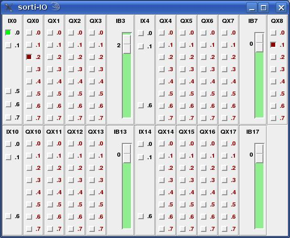

The Programming Language "immediate C"
John E. Wulff, B.E., M. Eng. Sc.
immediate C - iC for short - is an extension of the language C. It utilizes the syntax of C to give meaning to statements that have no semantic support in C. In addition to standard variables, which are modified by the flow of instructions, iC provides so called 'immediate' variables, whose values are updated, whenever a change of input calls for an immediate change in output. An efficient Data Flow technique implements this strategy.
iC provides programmers with built in operators, whose function is closely modelled on integrated circuits. The name iC is a reminder of this fact. Logical AND, OR, EXCLUSIVE-OR and NOT as well as D flip-flops, SR flip-flops and many others are implemented in such a way, that their use follows the same design rules, which apply to their hardware counterparts. These rules have led to a well-developed hardware technology, whose effectiveness is demonstrated by the success of today's complex computer hardware. Particularly the concept of clocked functions plays an important role in the language iC. It gives the same protection against timing races in iC programs, as it provides for hardware IC designs.
Writing programs in the language iC has the added quality, that many simple ideas and relationships, which should result in direct actions, can be written down immediately in one line. The coding of call back routines and other overhead is not required. It was this thought, which also prompted the name "immediate C".
Copyright (C) 1985-2008 John E. Wulff
You may copy and distribute this document under the terms of either the
GNU General Public License or the Artistic License, as specified in the README file.
For more information about this program, or for information on how
to contact the author, see Appendix A README or visit
http://je-wulff.de or contact ic@je-wulff.de
immediate C - kurz iC - ist eine Erweiterung der Sprache C. Sie basiert auf der Syntax von C und gibt vielen Befehlen Bedeutung, die keine semantische Unterstützung in C haben. Zu den einfachen Variablen, die im normalen Programmfluss verändert werden, kommen in iC so genannte 'immediate' oder 'sofort' Variablen, dessen Wert sofort verändert wird, wenn eine Eingangsänderung, die sofortige Änderung eines Ausgangs zur Folge hat. Um dies zu erreichen, wird eine effiziente Datenfluss-Technik eingesetzt.
iC stellt Programmierern eingebaute Operatoren zur Verfügung, deren Arbeitsweise die Funktionen von IC-Bausteinen modelliert. Der Name iC soll an diese Tatsache erinnern. Logisches UND, ODER, EXCLUSIV-ODER und NICHT sowie D flip-flops, SR flip-flops und viele mehr sind so implementiert, dass deren Anwendung den gleichen Entwurfsregeln entspricht, wie die der entsprechenden IC-Bausteine. Diese Regeln haben zu einer ausgereiften Technik geführt, deren Wirksamkeit durch unsere heutige komplexe Computertechnik belegt ist. Besonders das Konzept von getakteten (clocked) Funktionen spielt in der Sprache iC eine wichtige Rolle. Damit wird derselbe Schutz gegen Laufzeitprobleme in iC-Programmen erreicht, der damit in IC-Schaltkreisen bewirkt wird.
Programme die in iC geschrieben werden, haben das zusätzliche Merkmal, dass viele einfache Ideen und Zusammenhänge, die zu direkten Aktionen führen sollen, sofort in einer Zeile niedergeschrieben werden können. Callback-Routinen sind nicht notwendig. Auch dieser Gedanke ist im Namen "immediate C" enthalten.
Table of Contents
Abstract 1
1 Introduction 6
1.1 Relationship to Object Orientation 6
1.2 Relationship to Instruction Flow Languages 6
1.3 Programmable Logic Controllers 6
1.4 Relationship to Integrated Circuits 7
1.5 Summary 7
2.1 Immediate Variables 8
2.2 Immediate Types 8
2.2.1 Immediate declarations 8
2.2.2 extern immediate declarations 8
2.3 Immediate Expressions 8
2.4 Operators in immediate expressions 8
2.4.1 Arithmetic and Relational Operators 9
2.4.2 Bitwise and Bit Operators 9
2.4.3 Logical Operators 9
2.4.4 Conditional Operators 9
2.5 Function and macro calls 10
2.6 Parentheses 10
2.7 Immediate statements 11
2.7.1 Immediate Assignments 11
2.7.2 Aliases 11
2.7.3 The single assignment rule 11
2.8 Immediate control statements 11
2.8.1 Immediate conditional statement 12
2.8.2 Immediate switch statement 12
2.9 Literal blocks 12
2.10 Comments 13
2.11 Scope of immediate statements 13
2.12 Intrinsic limitations of immediate statements 14
2.13 Pragmas 14
3 Arrays 16
3.1 Immediate Arrays 16
3.2 Use of immediate Arrays 16
3.3 Implementation of immediate Arrays 16
3.3.1 FOR loops 18
3.3.2 Index expressions 19
3.3.3 immediate Array syntax 20
3.4 immac Macro facility 21
4 Built-in Functions 22
4.1 Unclocked flip-flop or LATCH 22
4.2 FORCE function 22
4.3 Clocked D flip-flop 23
4.4 Clocked SR flip-flop 23
4.5 Clocked SRX flip-flop 24
4.6 Clocked JK flip-flop 24
4.7 D flip-flop with Set and Reset 24
4.8 Mono-Flop with optional Reset 25
4.9 Sample and Hold 25
4.10 Sample and Hold with Set and Reset 25
4.11 Edge detectors 25
5 Clock Signals 26
5.1 Built-in immediate clock 26
5.2 CLOCK function 27
5.3TIMER function 27
5.4 TIMER1 function 28
6 Inputs and Outputs 29
6.1 Built-in Inputs 29
6.1.1 iClock 29
6.1.2 End of Initialization 29
6.1.3 Timing inputs 29
6.2 External Inputs and Outputs 29
6.2.1 Digital inputs 30
6.2.2 Digital outputs 30
6.2.3 Analog inputs 30
6.2.4 Analog outputs 31
7 User defined immediate Function Blocks 32
7.1 immediate Function Block Definition 32
7.2 immediate Function Block Call 34
8.1 Combinatorial actions 41
8.2 Clocked actions 42
8.3 Output actions 43
8.4 Input actions 43
8.5 Input/Output network 44
9 Compiler and Run-time system 45
9.1 Compiler 45
9.2 Run-time libraries 45
9.3 Run-time environment and system 45
10 Bibliography 48
11 The Author 49
immediate C - iC for short - is an extension of the language C. It utilizes the syntax of C to give meaning to statements that have no semantic support in C. In addition to standard variables, which are modified by the flow of instructions, iC provides so called 'immediate' variables, whose values are updated, whenever a change of input calls for an immediate change in output. An efficient Data Flow technique implements this strategy.
immediate C uses the OO-paradigm in its concept. Each immediate variable is an independent object, which acts on other immediate variables by a number of methods. These methods are expressed in a number of functions and overloaded on to the logical and arithmetic operators. In conventional OO languages like Smalltalk or C++, a method is an action which acts on the object owning the method. Conceptually descriptions of Object Orientation talk of methods being actions or messages sent from one object to another. It is in this sense that iC immediate variable objects interact with each other by the use of Data Flow techniques.
Traditional High Level Languages such as FORTRAN, Pascal or C are called Instruction Flow Languages, because they express instruction sequences for abstract machines, which are closely modelled on the underlying, instruction driven machine. By being independent of the actual machine, these languages have helped to hide unessential details of the hardware, to make programs portable and to focus the programmer's attention on the problem to be solved. The overwhelming usefulness of these instruction flow languages to express precise algorithms is recognized in iC, by including the whole of C or C++ as a subset, for dealing with algorithmic problems in established ways. Learning of the language iC should therefore be very easy for C and C++ programmers.
Many of the undesirable characteristics of the underlying hardware are reflected in today's High Level Languages. These characteristics make it difficult to express a large number of everyday problems briefly and clearly. Particularly the manipulation of events is not easy to integrate into programs written in traditional High Level Languages. Yet events play an increasing role in today's interactive, mouse driven programs. Many different functions must be ready to execute as a result of external or user generated events, which occur at unpredictable times. The instruction driven computer only executes a particular instruction, when the flow of instructions in a program gets around to executing that instruction. This statement may sound pedantic, but much of the complexity of modern programs is a direct result of this fundamental truism. How does one organize a program, so that it can respond quickly to many and varied external events? iC provides answers to this question.
The interrupt mechanism, designed to tackle such problems at a system level, is intractable for the average programmer and is not supported in a general way by most High Level Languages. iC harnesses interrupts and hides their complexity.
The situation is even more critical in systems that deal with a large number of external inputs. In the early 1980's a completely new class of computer was developed to deal with such problems in the environment of factories and machine control. These are the "Programmable Logic Controllers" or "PLC" for short. (SPS or Speicher-Programmierbare Steuerung in German) Conventional PLC's have a standard instruction driven architecture. They differ from conventional computers in two main areas:
They provide fast bit instructions and data access to individual bits on top of the more conventional instructions to manipulate data words.
They have a built in operating system, which runs the stored program over and over. Inputs are automatically polled at reasonably short intervals and Boolean and arithmetic expressions making up the stored program are re-evaluated continuously. This is necessary, because outputs and intermediate values in a PLC are assumed to reflect an immediate transformation of the inputs, as carried out by the expressions of the stored program.
This organization of PLC's has two very serious drawbacks, which are direct consequences of the differences mentioned:
Conventional PLC's require a special CPU, which can never be as cheap as a mass produced microprocessor chip, or they emulate the PLC instruction set, in which case they are slow.
The cyclic execution of the stored program sets very real limits to the length of possible programs. The longer the program, the longer the cycle time, which is the time interval at which inputs are polled. If this time gets too long, the response of the PLC is no longer acceptable for many applications.
PLC's are facing a crisis on two fronts:
Traditionally PLC program memories were measured in kilobytes. Today megabytes of memory are available at low cost. This 1000 fold increase in potential program size cannot be utilized with the cyclic execution strategy of conventional PLC's. Even with a 10 fold increase in speed, these machines would be too slow.
The second crisis is the lack of a High Level Language for PLC's. Most PLC programs are developed with antiquated tools that support semi graphical languages for Boolean logic and assembly programming for numerical subsystems. The international standard IEC-1131 is attempting to fill this vacuum by specifying such a language. Unfortunately this standard simply freezes current programming practice, by incorporating five different languages, four of which are the semi graphical and assembly languages in common use today. For algorithmic programming it introduces a completely new High Level Language called 'Structured Text', which will require a large learning effort by programmers and whose utility in the limited area of PLC's seems doubtful. IEC-1131 makes no attempt to confront the fundamental speed problems facing PLC users.
Because PLC's are completely compute bound, the type of program organization they use is unacceptable for standard computers. Nevertheless many programmers designing event controlled applications on standard computers resort to polling schemes, despite the drawbacks involved. The High Level Languages they use do not give them any simple alternatives.
The language iC can be used to program standard computer systems and PLC's in a uniform way. iC is fast, because it responds immediately to any changes in input, and does not waste time evaluating expressions, whose input operands have not changed. The extensions which iC offers over the algorithmic language C, can also be coded graphically, using current CAD packages for IC design. For factory staff, who require very simple programming methods, the use of Ladder Diagram (LD) or Function Block Diagram (FBD) in conformity with IEC-1131, using suitable front ends is possible.
iC provides programmers with built in operators, whose function is closely modelled on integrated circuits. The name iC is a reminder of this fact. Logical AND, OR, EXCLUSIVE-OR and NOT are the basic functions implemented using a very fast data-flow algorithm. The full range of arithmetic operators is also available. These are not normally considered as hardware components, although once they formed the basis of the very important “Analog Computer”. They can be used for implementing control algorithms, fuzzy logic – the possibilities are endless. Also implemented as efficient built in functions are the D flip-flop, SR flip-flop, JK flip-flop, shift register and many other popular integrated circuit types, which are implemented in such a way, that their use in iC programs follows the same design rules, which apply to their hardware counterparts. These rules have led to a well-developed hardware technology, whose effectiveness is demonstrated by the success of today's complex computer hardware. Particularly the concept of clocked functions plays an important role in the language iC. It gives the same protection against timing races in iC programs, as it provides for hardware IC designs.
Another idea taken from integrated circuits is Large-Scale-Integration. User defined Function Blocks emulate LSI circuits and produce complex sub-units with a known functionality and a well defined external interface, which can be re-used without regard to the internals. IC hardware design may not be part of the average programmers repertoire, but there is much literature on the subject. The run-time code is not meant to be just a simulation of IC hardware – the generated code is extremely fast, because of the data-flow techniques used and can provide useful control programs.
Writing programs in the language iC has the added quality, that many simple ideas and relationships, which should result in direct actions, can be written down immediately in one line.
if (IX0.0) { printf(”Hello! world\n”); }
This is a complete runnable iC program. IX0.0 is an external immediate bit input in IEC-1131 notation, which generates an event when it changes state. The coding of call back routines and other overhead is not required. It was this thought, which also prompted the name "immediate C".
An immediate variable is a data object that has a value, but which also has the ability to transmit any change in its value as an event. This event triggers the re-calculation of all expressions that contain the immediate variable. The fundamental assumption is, that the value of an expression only changes, if one of the variables making up the expression changes. Thus it is only necessary to re-calculate an expression, if one of the variables making up the expression changes. Conversely, if an expression is re-calculated whenever one of its variables changes, and all unnecessary recalculations of expressions are left out, the value of all expressions will be up to date within a very short time. Immediate variables provide the mechanism to make this strategy possible.
iC introduces the type modifier imm to declare immediate variables of the basic data types int in C and the basic data type bit, which is a new data type in iC. Type bit declares variables capable of holding the values 0 and 1. Unless the C or C++ compiler, used to translate the generated code, itself supports bit as a basic data type, the use of type bit is restricted to imm bit. The word 'boolean' was avoided deliberately, because it has a different semantic bias in languages where it is used. (Truth of a test rather than single bit objects). Both imm int and imm bit are value types.
iC also has clocking types imm clock and imm timer, which can only be used as function parameters. These will be discussed later.
An immediate declaration declares an immediate variable to be either of type imm int, imm bit, imm clock or imm timer, using syntax similar to declarations in C. Any value type variable not declared before it is used is assumed to be of type imm bit. Undeclared clocking type variables inherit the type from the assigning function. Calling the immcc compiler with the strict option -S makes declarations mandatory for all imm variables – this is highly recommended. All variables in a declaration may be assigned directly.
imm int
fader, colour; // declaration only
imm
int brightness = fader *
colour; // decl and assignment
Just like in C, several iC sources may be compiled separately and linked into a single application. When immediate variables declared and assigned in one source are referenced in another source, they must be declared with an extern declaration, before they can be used in an expression.
extern
imm int fader,
colour;
extern imm int
brightness;
Immediate expressions are arithmetic or bit expressions external to all functions, which contain at least one immediate value variable. Immediate arithmetic expressions may also contain constant expressions. An immediate expression is re-calculated whenever the value of one of the immediate variables it contains has changed. If an expression consists only of constants and no immediate variables it is a constant expression evaluated once during initialisation.
Most operators available in C may be used with immediate variables. The precedence of the operators is the same as in C. Some C operators are not valid for immediate expressions, because the semantics are different. These are the increment and decrement operators ++ and --, as well as structure and pointer operators -> .(dot) &(address of) and *(pointer dereference). Assignment expressions += etc. are also not allowed. These restrictions do not apply to embedded C code in literal blocks and immediate if else or switch statements, which will be introduced later.
Array variables and index expressions using [ ] are available with the Array extension of the language using the pre-compiler immac (called automatically). See section section 3.
The binary arithmetic operators + - * /, the modulo operator %, as well as unary - and + operate on numeric values and yield numeric results of type imm int. The same applies to the shift operators << and >>. If an operand of the wrong type is used with one of these operators, automatic type conversion takes place. Values of type imm bit are converted to the int values 0 or 1 corresponding to the values of the bit. The relational and equality operators <, <=, >, >=, ==, != also have numeric operands, but these operators yield imm bit results by default.
If both operands of the binary operators &, |, ^ or the single operand of operator ~ are of type imm int, these operators carry out bitwise manipulation on their integer operands – just like in C. The result is an imm int. Immediate arithmetic, relational and bitwise logical expressions with numeric operands may contain constants, as well as immediate operands.
If one of the operands of the binary operators &, |, ^ or the single operand of operator ~ are of type imm bit, these operators carry out the bit manipulation operations and, or, exclusive-or and not on imm bit objects. The result is an imm bit. Any operands of type imm int are converted to imm bit. The numeric value 0 converts to 0 (false), any other arithmetic value converts to 1 (true). The bit operators are used frequently in immediate C, since bit manipulation is very common in event driven systems – more so than in algorithmic programs written in conventional languages like C, which does not even provide a type bit. Such logical bit expressions in immediate C may not contain any constants or non-immediate values. Constants in immediate bit expressions do not make much sense. They either do not change a variable (a & 1, b | 0) or they produce another constant (c & 0, d | 1, ~1).
The logical connectives && and || are executed as arithmetic expressions, when one of the operands is of type imm int. Evaluation is from left to right, and evaluation stops when the truth or falsehood of the result is known – just like in C. The result is of type imm bit by default. The unary complement operator !, operating on an imm int produces an imm bit result.
The operators &&, || and ! with only imm bit operands are interpreted by the compiler exactly like the logical operators &, | and ~. There is little sense converting such bit operands to integers, evaluating the arithmetic expression and then converting back to a bit. Since evaluation of && and || in bit expressions is not from left to right as expected, but depends on which operands in the expression change, their use and the use of ! in expressions where all operands are imm bit is deprecated and causes a warning.
The operators ? : implement conditional expressions, which are evaluated as a whole in an arithmetic context. The conditional expression
expression_1 ? expression_2 : expression_3
is a valid immediate arithmetic expression, which is triggered by a change in any immediate variable in any of the three sub-expressions. An alternate form of conditional expression, which leaves out the middle expression is allowed by modern C compilers, particularly by gcc and is allowed in iC (if the C compiler used supports the construct)
expression_1 ? : expression_3
The following excerpt from 'info gcc' explains the advantages and use of the construct:
5.8 Conditionals with Omitted Operands
The middle operand in a conditional expression may be omitted. Then if the first operand is non-zero, its value is the value of the conditional expression.
Therefore, the expression
x ? : y
has the value of `x' if that is non-zero; otherwise, the value of `y'.
This example is perfectly equivalent to
x ? x : y
In this simple case, the ability to omit the middle operand is not especially useful. When it becomes useful is when the first operand does, or may (if it is a macro argument), contain a side effect. Then repeating the operand in the middle would perform the side effect twice. Omitting the middle operand uses the value already computed without the undesirable effects of recomputing it.
Immediate expressions may contain function calls for several types of functions and macros. All of these look very similar to C function calls. The differences will be discussed in later chapters. These can be:
Built in iC function calls. The parameter ramps and return values are pre-defined.
User defined iC function block calls. These must be defined by the user before they are called.
C function calls.
C pre-processor macro calls.
C function and macros called in immediate expressions may only have int parameters (if any) and an int return value. They should be declared as follows to evoke an error message if the function name is mistyped or the parameter ramp or return value is wrong:
extern
int rand(); // C function with no parameters
extern int
rand(void); // alternative syntax
extern int
abs(int); // C function with 1 parameter
extern int
min(int, int); // macro with 2 parameters
When 'strict' is active, any C functions or macros, which are called in immediate expressions must be declared in the iC code. If 'strict' is not active, mistyped function names with any type of parameter ramp look like C function calls and will be compiled as such without error. This error is not discovered until link time. With an extern declaration, a clean error message is produced and the extra effort is not great. When a pre-declared C function or macro is called in an immediate expression, a check is made, that the number of parameters is correct. Otherwise an error message is issued.
If declared a second time, the following will evoke a warning if 'strict'
extern bit rand(); // wrong return type – converted to int
If declared a second time, the following will evoke an error if 'strict'
extern
int rand; // not used as a function
extern clock
rand(); // absolutely wrong return type
extern timer
rand(); // absolutely wrong return type
No check is made for C function calls in C fragments controlled by if else or switch statements or other literal C code, since the compilation is handled by the follow up C compiler. Note: built in iC functions and iC function blocks can not be called in such C fragments under any circumstances.
In immediate C it is possible to write mixed arithmetic and bit expressions, nested to any depth using the usual precedence rules and parentheses.
Immediate arithmetic expressions are evaluated as a whole C expression, every time one of their component immediate variables changes – but only then. To improve execution speed, it is sometimes more efficient to break up very long immediate arithmetic expressions with many operands into several sub-expressions – particularly if each sub-expression is triggered by different operands. In this case not all the sub-expressions are executed. On the other hand there is a certain amount of overhead for triggering each new node and execution of a compiled C expression is fast, even if it has many operands.
Immediate bit expressions are compiled into a network of forward looking nodes, one for each different bit operand and execute even more efficiently. There is no need to break up a complex immediate bit expression into sub-expressions – the compiler does this already. Immediate bit expressions embedded in an arithmetic expression are compiled into separate sub-expressions and only the type converted arithmetic result is used in the arithmetic expression.
Most immediate statements are immediate declarations or immediate assignments terminated by a semicolon. Immediate declarations and assignments may be combined.
Immediate assignments are assignments of immediate expressions to immediate variables external to all functions. Value changes to an immediate variable are detected in the assignment and this event triggers the re-calculation of follow on expressions. Like in C, an immediate assignment is also an immediate expression, which means that assignments embedded in expressions are allowed. As noted earlier, immediate assignments can be combined with the declarations of immediate variables.
Immediate arithmetic and bit assignments, in which the right hand expression consists of only a single immediate variable are accepted by the iC compiler, but produce no code. This type of statement is called an alias. The alias name on the left hand side is simply an alternative name for the immediate variable on the right hand side. Any reference to the alias will be substituted by the right hand side variable, whose value is always the correct immediate value of the intended assignment. Bit aliases may be either normal or inverting. The bit not operator ~ does not produce any code when used on an imm bit operand. All ~x sub-expressions are implemented as inverting aliases of x. Thus the direct assignment of ~x to another imm bit variable is also an (inverting) alias.
imm bit a, b; b = a; // b is
an alias for a (normal)
imm bit x, nx; nx = ~x; // nx is
an alias for ~x (inverting)
imm int j, k; k = j; // k is an
alias for j
imm int two; two = 2; // two is an alias for 2
Immediate assignments must obey the single assignment rule, a rule which applies generally for data flow systems1. Any immediate variable may only be assigned in one immediate assignment. The value of an immediate variable is the value of the expression, from which it is assigned, at all times. A second assignment to the same immediate variable would force different values on that variable, causing a conflict. The immediate variable being assigned cannot hold different values simultaneously. The single assignment rule is monitored by the iC compiler. An error message is generated if it is broken.
Expressions that occur in C code triggered by immediate conditional if else or switch statements or in C functions in literal blocks may contain immediate variables. These expressions are not immediate expressions and are not triggered by those variables. When such an expression is executed in the C code, the current value of any immediate variable is used.
Immediate variables may even be assigned in C code embedded in immediate conditional if else or switch statements and in literal blocks. Such an assignment is not an immediate assignment – the value is changed when the C statement is executed. Nevertheless any change in the immediate variable assigned in the C code will trigger immediate expressions that contain that variable. Several such assignments to the same immediate variable may be made inside different sections of C code. Every new assignment changes the variable in accordance with the intended algorithm. Immediate variables used in C code must be declared as immC bit or immC int in an iC code section. An immediate variable that is assigned in C code may not also be assigned in an immediate assignment.
An immediate conditional if else statement and an immediate switch statement are the only control constructs available in iC. The syntax of both statement types is similar to their C counterpart, except that braces around the C statements are mandatory. In particular an else if is not allowed, since the if after the else would have been part of the C statement controlled by the else part of the whole immediate if statement, which would be very confusing.
if
(imm_bit_expression)
{
C_statement_1 }
if
(imm_bit_expression)
{
C_statement_1 }
else
{
C_statement_2 }
switch
(imm_int_expression)
{
C_statement }
These are valid immediate statements when they occur external to any function and when the controlling expression is an immediate expression. The controlling expressions in immediate conditional if else or switch statements are synchronized by a clock. The default clock is iClock. Other clocks or timers may be specified as explained in section 5. In all cases any change in the controlling immediate expression, synchronized by the controlling clock, triggers execution of the C statements.
immediate conditional statements use the keyword if and optionally else. The controlling expression for an immediate conditional statement is an immediate bit expression. If not, it is converted from int to bit automatically. A 0 to 1 transition or rising edge causes C_statement_1 to be executed. A 1 to 0 transition or falling edge causes C_statement_2 to be executed (if an else is coded). The C_statements are embedded C compound statements, not immediate statements.
%{
int
a,
b, c; /* C declarations in a literal block */
void
reset(void); /*
C function declaration */
%}
imm
bit sw1, sw2, sw3; //
immediate declarations
if
(sw1 & sw2 | sw3) { /*
imm controlling expression */
a = 1; b = 12; c = -2; /* C code
executed on rising edge */
}
else {
reset(); /*
C code executed on falling edge */
}
For the immediate switch statement, the controlling expression is an immediate int expression. The C_statement is an embedded compound statement, which has the usual form of a C switch statement with case labels. Any change in the controlling expression triggers the switch statement. The value of that expression after the change is applied to the switch and the selected case is executed.
%{
enum Fuzzy
{ OFF,
DIM, MEDIUM, BRIGHT
};
%} //
literal block
switch
(brightness) { //
declared and assigned above
case
OFF: lightVoltage(0); break;
case
DIM: lightVoltage(10); break;
case
MEDIUM: lightVoltage(18); break;
case
BRIGHT: lightVoltage(24); break;
default: lightVoltage(24); break;
} //
end of immediate switch statement
The immediate conditional if else and switch statements open the way to trigger the execution of short C fragments on particular events. These events are either rising or falling edges of bit values or changing arithmetic values. If more than a fragment of C code is involved, it is good practice to code this in a C function, and to call that function in the immediate statement. Very long immediate statements would make the purpose of those statements unclear. Depending on the time critical nature of the application, C code should not take too long to execute, because during the execution of such C-fragments the processing of other immediate events is held up.
Literal blocks are sections of C code enclosed in special braces %{ and %}. They may occur before, between and after any immediate statements. Literal blocks are copied verbatim to the front of the generated C output code (without the special braces). Literal blocks are useful to declare any C variables, define macros and to declare and define auxiliary C functions to support the application. Any C-pre-processor statements such as #include or #ifdef must be written as %#include or %#ifdef in the literal block. The %# must be written without intervening spaces. The % is dropped by the iC compiler in copying the literal block to the generated C code. This allows C-pre-processor statements for the iC sections of code which are resolved before the iC compilation.
%{
%#include
<math.h> /* special iC-pre-processor syntax */
int x, y,
z; /* declarations in a literal block */
int abs(int); /* C
function declaration */
%}
The run-time system will call the function iCbegin() when an iC application is started before any immediate processing. This function can be provided by the user in a literal block. If it is not provided, an empty function iCbegin() returning 0 is provided by the system. User implementations should return 1. One use of iCbegin() is to initialise immC variables. It may even contain a fork() call to spawn a child process, which will run in parallel with normal immediate processing. This opens up the way to build mixed applications using conventional multi-process or multi-threaded control strategies in parallel with immediate C code, which leaves a lot of CPU time to do other things.
The complementary function iCend() is called by the run-time system when an iC application is terminated externally (iC applications never terminate by themselves). iCend() could be used to free memory allocated with malloc or new.
%{
int
iCbegin() { ...; return 1; } /* optional C initialisation */
int
iCend() { ...; return 1; } /* optional C termination */
%}
If the code in literal blocks, or code in C blocks controlled by an immediate if else or switch, is specifically C++ code, then the generated code must be compiled by a C++ compiler. The Code generated from the iC statements is pure C code.
C style comments /* ... */
can be used anywhere between tokens of iC programs.
C++
style comments may
be used at the end of iC
lines. // ...
Some older C compilers do not support C++ comments, so their use in literal blocks and C statement blocks controlled by if else or switch may lead to portability problems.
Immediate variables are global or static and must be declared external to all functions like other global variables in C. Moreover all immediate statements must also be placed external to functions. A statement in a function is only executed (made active) during the execution of that function. Immediate statements are active at all times.
Consecutive immediate statements are not executed in sequence. Each immediate statement is independent of all other immediate statements. They can be placed in any order, without influencing the behaviour of the program. This is analogous to the placement of global variables and functions in C.
Immediate assignments are often combined with their declarations and look like the initialization expressions of ordinary global C variables. In C, this initialization takes place before the function main() is started. In iC, immediate statements simply stay active until the program is stopped. For most of the time the process running the iC program waits in a select() call, which wakes up whenever an external input or internal timer changes. Because the processing required to react to such an input is in the order of microseconds, this strategy ensures that the CPU loading of an iC process is minimal. This can be observed easily with tools like xosview under Linux. Times measured with a modern 1.8 GHz processor were > 100 us, which is mostly overhead to get the input process scheduled. The time to even execute a chain of 10 consecutive events is of the order of 10 us. This corresponds to a 0.1% loading for a process including a 100 ms timer, of which 0.01% is actually used by the immediate statements.
/*
VERY SIMPLE WASHING MACHINE PROGRAM */
imm
bit on; // switch to turn
system on/off
imm bit
waterLo; // water level switch
imm
bit tempLo; //
thermostat, turns off when hot
imm
bit fill = on &
waterLo; // fill with water until filled
imm
bit heat = on &
~waterLo
& tempLo; // heat water when filled
Arrays of immediate variables have been realized and will be covered in the next chapter. Structures containing immediate variables have not been realized in the current release, although they are possible and may be implemented in a future release. Pointers to immediate variables in immediate expressions are semantically indeterminate. They are therefore not implemented. This is also pointed out in one of the recommendations in the IEC-1131 standard, which justifies the language 'Structured Text' instead of C on the grounds, that a pointer in a machine control program has no meaning and could cause disaster. The same limitation has been recognized in the language Java, which only recognizes references as constant pointers.
Immediate assignments, in which the left hand side variable appears in the right hand side expression are of very doubtful utility. Such a statement expresses a very tight feedback loop, which will either lock up, or generate a high speed oscillator. For this reason a warning message is generated by the iC compiler.
imm
bit a, b;
a = a &
b; // a locks up when b becomes 0
b = ~b
| a; // b oscillates when a is 0
imm
int j;
j = j + 1; // j
never catches up with itself
For the above reason the C assignment operators +=, -= etc. as well as ++ and -- cannot be used in immediate statements. Feedback over several statements is allowed, but oscillations are controlled so that the system does not become compute bound. If oscillations do occur, a runtime warning is produced since they are probably not intended.
Like in any programming language, it is possible to write incorrect iC programs. It is the job of the programmer, to understand the model on which the execution of the iC language constructs is based, and to create programs that use these constructs correctly. iC is modelled on hardware building blocks, which provides an easy starting point.
The following was probably intended by the last statement above:
imm
bit gate, p;
imm
int j; // j counts every
rising edge
if
(gate & p) {
j++; } //
of p, while gate is hi
In this example, gate & p is an immediate expression that triggers execution of the non-immediate C statement j++; Assignment operators +=, -= etc. as well as ++ and -- with immediate variables are allowed in embedded C statements. The above construct is one way to implement a counters in iC. A better way is shown in section 4.9.
Pragmas affect the compilation phase of an iC program. Pragmas are introduced by the keywords use and no.
use turns a pragma
option on
no turns
it off
Currently two pragmas are implemented in immediate C: alias and strict.
use
alias; // equivalent to -A command line option
no
alias; // turn alias
option off
use strict; // equivalent to
-S command line option
no
strict; // turn strict
option off
The alias pragma or -A command line option forces the compiler to generate a node for each alias in the generated C-code (default is to generate no node). This is needed in two circumstances:
It is required, if an iC source refers to an alias in another iC source by an extern reference. Since all references to aliases are normally removed from the compiled code, the C-object modules, which are generated from such code could not be linked. With the use alias option, the code can be linked and the remaining aliases are resolved at start up.
The use alias option is also useful for debugging. Only when it is set, are alias names displayed as active words by iClive.
The strict pragma or -S command line option forces the compiler to expect a declaration of all immediate variables, before assignment. The default with no strict, is to generate an imm bit node for an assignment to an undeclared name. Similarly an assignment to an undeclared name from a CLOCK() or TIMER() function call results in a default imm clock or imm timer variable. Such laxness is OK for small single source projects, but can lead to problems with larger projects. I had a case in a large project, where I had declared a number of imm int variables and mistyped one of them, so the correct name was not declared. This name was then assigned - but converted to imm bit and then back to imm int when used, leading to incorrect arithmetic.
As noted earlier, C functions and macros should be declared extern with their correct parameter ramp and return value. When “strict” is active, error messages are output if an undeclared C function or macro is called in an immediate C expression.
Several options (currently only two) may be set or reset together in one pragma call:
use alias strict; //
equivalent to -AS command line option
no strict alias; //
turn both options off
It is recommended to write
as the first line of all production iC programs - the space overhead for extra alias nodes is insignificant and debugging becomes much easier. Particularly the strict option is highly recommended anyway and results in no binary overhead. (Grateful acknowledgements to the designers of PERL).
The scope of these pragmas is a file. If a pragma is enabled in one file it carries over to an included iC header file. If on the other hand a pragma is changed in a header file, it reverts to its previous value in the iC file after the #include statement, which includes the header file. This makes sure that sloppy iC programs, which include a header file, which uses “strict” syntax, will not report errors, because they do not follow the “strict” syntax. This scope feature can only be used successfully with the use strict pragma, since use alias only comes into effect during C code generation – at this point the complete source has been parsed. This means use alias should definitely be used once in iC programs, which consists of several parts with extern references between them. Other single source iC programs can use alias , which produces slightly larger code, but which can be debugged without recompiling with the -A flag.
Arrays in conventional instruction flow languages are a named collection (often of fixed length) of similar variables, which are accessed by an index expression, eg a[5]. Each such entity is an individual object, but in instruction flow languages the index is often a variable, which is manipulated in a loop and references to the individual indexed entities occur sequentially, as in the following C example:
for
(n = 0; n < 4; n++) {
a[n] = b[n] * c[n];
}
In data flow languages like immediate C loops at run-time are meaningless. Each immediate variable is an entity, which is controlled by one assignment statement. The variable changes, when a variable in the expression of the controlling statement changes and not when some loop runs. It is well to remember, that immediate variables and their controlling expressions are more like IC building blocks connected in a static network. In that sense immediate Arrays are like hardware registers.
Arrays may be defined in immediate C, but each entity acts individually at run-time, which means that an individual immediate object must be generated for each immediate array member.
Arrays in conventional languages as well as in immediate C give programmers extra capabilities to express themselves. These fall into two distinct categories:
Arrays allow the writing of repeated similar statements as one statement – this saves a lot of writing, but could also be done without arrays.
Additionally arrays allow the parametrisation of the array length, both within the program and in the command line of the program, which is probably more important. For immediate C, this makes possible the writing of control programs in which the number of control elements or groups is variable and the actual number is not bound until compile time. This would not be possible without arrays in the language.
NOTE: the definition of dynamic arrays, whose sizes change at run-time is meaningless and not possible in immediate C.
An example of the usefulness of arrays in the language would be an iC program controlling lifts in a building. The number of floors varies from building to building – so do the number of parallel lifts, which may be required. With arrays, a single iC program can be written, which can be compiled for a different number of floors and a different number of parallel lifts as follows:
immac -P FLOORS=12 -P LIFTS=2 liftControl.ica
Since each immediate array member is an individual immediate object at run time, it is important for debugging with iClive to be able to have a listing showing each individual array member – not just its collective form, eg a[n]. To achieve this, an iC program containing arrays is translated by the pre-processor immac to iC code without arrays. This is a simple text operation in which macros are expanded, loops are unrolled and index expressions are evaluated.
The iC language with arrays has three additional language extensions:
C-style 'FOR loops', which define a loop variable and a range.
Index expressions in square brackets, which allow the definition of array variables – usually in a loop.
Macro definitions, which are processed directly by immac - can be defined in two ways:
in C-pre-processor style with %define
instead of #define,
eg
%define FLOORS 12
in the command line, just like for a C
compiler, eg
-P FLOORS=12
Macros will mostly be used inside the square brackets of an array variable or in the control line of a FOR loop, but they can be used anywhere in the iC code or in the definition of another %define macro – macros may be nested. The above implies, that the immac pre-compiler could be used as a macro pre-processor for iC programs without any arrays at all.
iC programs containing the above three extensions are called iCa programs and should be written in a file with the extension .ica – the immac pre-compiler translates an iCa program to an iC program with the extension .ic in which macros and 'FOR loops' are expanded and immediate array instances are converted to simple immediate variables. The following iCa snippet in file lift.ica
%define FLOORS 4
FOR
(n = 0; n < FLOORS; n++) {
imm bit a[n] = b[n] &
c[n];
}
expands to the following iC file lift.ic when compiled by immac:
imm bit a0 = b0 & c0;
imm
bit a1 = b1 & c1;
imm bit a2 = b2 & c2;
imm bit a3 =
b3 & c3;
The 'FOR loop' is executed at compile time and generates repeated copies of the statement(s) in the compound statement controlled by the loop. This only makes sense, if there are elements in the loop statement(s), which are modified by index operations using the control variable of the 'FOR statement' – in the above example that is the variable n.
The translation of indices in square brackets is carried out in two steps:
The expression in square brackets is evaluated as an integer expression.
The numerical value produced replaces the square brackets and the expression it contains.
In the above example the index expressions are simply the variable n. But the index expressions can be more complex. A feature of iCa indexing may seem strange at first, but it turns out to be very useful; the square bracketed index expression may be placed anywhere in a word, not only at the end of a word. It may even be placed on its own – in that case the expression is evaluated and becomes a suitably modified integer constant in an iC statement. The following example shows both:
FOR
(n = 0; n < 10; n++) {
QB[n] = IB[n+1] *
[n+2];
QX[n/8].[n%8] = IX[n/8].[n%8] & IX[10+(n/8)].[n%8]; //
out: [n]
}
expands to :
QB0 = IB1 * 2;
QX0.0 = IX0.0 &
IX10.0; // out: 0
QB1 = IB2 * 3;
QX0.1 = IX0.1 &
IX10.1; // out: 1
QB2 = IB3 * 4;
QX0.2 = IX0.2 &
IX10.2; // out: 2
QB3 = IB4 * 5;
QX0.3 = IX0.3 &
IX10.3; // out: 3
QB4 = IB5 * 6;
QX0.4 = IX0.4 &
IX10.4; // out: 4
QB5 = IB6 * 7;
QX0.5 = IX0.5 &
IX10.5; // out: 5
QB6 = IB7 * 8;
QX0.6 = IX0.6 &
IX10.6; // out: 6
QB7 = IB8 * 9;
QX0.7 = IX0.7 &
IX10.7; // out: 7
QB8 = IB9 * 10;
QX1.0 = IX1.0 &
IX11.0; // out: 8
QB9 = IB10 * 11;
QX1.1 = IX1.1 &
IX11.1; // out: 9
As shown above, index expressions may even be used in comments. This can be useful, because the expanded iC text must later be used for debugging with iClive – the original text with 'FOR loops' and index expressions is not meaningful for following the values of actual nodes at run-time. The above example already gives a hint of how much writing can be saved. The way I/O bit variables following the IEC-1131 standard are expanded is particularly useful.
The iCa extensions to the iC language can be embedded as additional lines in regular iC code. A FOR statement and a %define macro definition may not be embedded in the middle of a line of iC code – not even between iC statements, which have been written in one line. This limitation is similar to the limitations imposed by the C pre-processor cpp on the C language.
'FOR loops' follow the syntax of C 'for statements' with the difference, that the controlled iC statements must be enclosed in braces (which is also required for immediate switch and if else statements):
FOR
(expr1;
expr2; expr3) {
iC
statement(s), which are repeated under control of the loop
or
nested 'FOR loops'
}
Other restrictions are:
The controlling FOR (;;) must be written in a single line.
The opening brace may follow the FOR (;;) on that line or must be written by itself on the next line.
The closing brace must follow any iC statement(s) on a line by itself.
The 'FOR statement' line and the lines containing braces controlled by the 'FOR statement' may finish with a C or C++ comment (a C comment must finish on that line). There may be no leading or embedded comment(s).
A 'FOR statement' may only use one control variable, which is an int by default:
FOR (n = 0; n < 10; n++) or FOR (int n = 0; n < 10; n++)
The control variable is the first 'word' of expr1, which is not 'int' followed by '='. The word 'int' in the second form is optional and can be written to remind programmers, that the control variable is an integer. The control variable may not be declared anywhere else.
Other atoms in the three expressions must be either constant expressions or expressions which contain control variables of the current and of outer 'FOR loops'. All expressions may contain macros, which must expand to integer constants or expressions containing valid loop control variables. Under no circumstances may immediate variables be used in these expressions.
The names of control variables must be different from any immediate variable.
The scope of the control variable of a 'FOR loop' begins when the control variable is initialised in the 'FOR statement' and ends with the final matching brace. The control variable is not valid outside of this scope.
Since immac is implemented as a Perl script, an alternate Perl type of 'FOR loop' may be used, although its use is deprecated. For completeness it is described here.
FOR n
(<Perl
type list>) {
iC
statement(s), which are repeated under control of the loop
or
nested 'FOR loops'
}
Similar restrictions to those above apply. The variable after the 'FOR' is the loop control variable. It may optionally be preceded by the word 'int'. The control variable is given each value of the 'Perl list' for each iteration of the loop. Some powerful manipulations are possible with this form.
FOR
int n (0 .. 3) {
a[n],\
}
produces
a0,
a1, a2, a3,
whereas the following loop
call(\
FOR
n ("abc",
"def", "ghi", "jkl") {
// list of strings
[n],\
}\
);
produces
call( abc, def, ghi, jkl, );
As shown in the two examples above, lines terminated by a back-slash (\) are output without starting a new line – this make it possible to generate lists in a single line. This applies both outside and inside 'FOR loops'. The end of the 'FOR loop' will terminate such a generated list, unless the final brace of the 'FOR loop' is also followed by a back-slash (\) as shown in the generated function block call statement in the last example above. The last parameter in that generated call statement is followed by a comma, which is allowed in iC for parameter lists.
Comma separated lists in normal and extern declarations must be terminated by a semi colon. They may not have a comma followed by a semi colon ',;' at the end. To achieve this, a special characteristic of iCa index expressions is used (see next paragraph). The value in square brackets may be strings as well as numbers, since they are actually generated by Perl code. To generate a variable length – single line – declaration, use the following:
%define MAX 5 // iCa macro explained in section 3.4
imm
bit\
FOR (n = 0; n <=
MAX; n++) {
a[n] [n < MAX ? ","
: ";"]\
}
produces
imm bit a0, a1, a2, a3, a4, a5;
Each execution of the second conditional index expression [n < MAX ? "," : ";"] in the loop for n < 5 produces a single comma, which is appended – the last execution of the index expression produces a semi colon. For this to work, the first string must contain a comma – the second string can be any value – even the empty string "".
The 'FOR statement' line of both types of 'FOR loop' and the lines containing the associated braces are not copied to the target except as comment lines, if the -a option is active for the immac compiler.
Index expressions are expressions in square brackets usually involving integer constants and loop control variables. Unlike in other languages these 'index' expressions can be placed anywhere in the iC code – not just as an index of an array variable. immediate array variables cannot even be declared directly – they come into existence as simple immediate variables by evaluating the index expression and replacing the square brackets by the numeric or string result of that evaluation. The underlying simple immediate variables must of course be declared (unless not strict) – this is best done as follows:
FOR (n
= 0; n < 10; n++)
{
imm bit a[n];
}
Normally the square brackets are placed after a name, which then makes the array variables look like those in C. But there are special cases where the square bracketed index expression is placed somewhere else, as we saw in the earlier examples (computing IEC-1131 I/O variable names).
The semantics of index expressions is, that the expression in square brackets is evaluated during compilation and the numerical or string result replaces the square brackets and the expression they enclose. When the index expression is a simple array reference, this produces a name followed by a number.
Normally index expressions occur in iC code in a 'FOR loop'. I deliberately say iC code and not iC statements, because 'FOR loops' are used not only to generate lists of statements, but also lists of parameters – both for the definition and the call of function blocks, whose parameter lists can be varied at compile time. Another use is varying constant parameters. Inside a 'FOR loop' or a nest of 'FOR loops', the iC code usually use the 'FOR loop' control variable(s) in the index expression(s) to make each repeated iC code line different.
For index expressions in immediate C code outside of a 'FOR loop', the expression must be a constant expression – no variables are allowed (remember no 'FOR loop' control variables are in scope anyway). Nevertheless an iC variable, which must be used as an indexed array variable inside a 'FOR loop' looks better if it follows the same syntax outside of the loop. The variable a[1] could of course be written as a1 – this is the same immediate variable. But inside a loop it must be written as a[n] and only the varying value of n will produce a0 a1 etc.
Index expressions in embedded C code – either in a literal block or in a compound C statement contolled by an immediate if else or switch statement may have index expressions, but they are part of the C code and are not changed except index expressions, which contain an in-scope FOR loop control variable. This means that the translation of constant index expressions – as described in the previous paragraph - are not carried out in embedded C code. In the rare instances where such a translation is needed, it must be done manually – write a1 instead of a[1].
A special case in embedded C code occurs, if a numerical value generated by the control variable of a FOR loop must be placed inside the square brackets of a C array reference. This can be done by simply embedding the iCa index expression in the C index expression – eg:
if
(IX0.0)
{
int carray[3]; //
start of embedded C code
FOR
(n
= 0; n < 3; n++)
{
carray[[n]]
= icarray[n];
}
}
produces
if (IX0.0)
{
int carray[3]; // start
of embedded C code
carray[0] = icarray0;
carray[1]
= icarray1;
carray[2] = icarray2;
}
As can be seen in the above example, iCa 'For loops' may be embedded in C code – this is the reason why the keyword 'FOR' was chosen instead of 'for' – the C code may also contain C for statements.
To sum up, immediate arrays are not declared as such – variable names are used with index expressions in square brackets. The programmer must be aware that this generates simple immediate variables starting with the array name followed by a number. Such generated variable names cannot be used anywhere else – this would show up as a multiple declaration during iC compilation. If we use a one-dimensional array in an iCa program – eg sa, any array reference will simply have a number appended to the array name in the generated iC code.
i = 2,
sa[i]
produces sa2
i = 22, sa[i+1] produces sa23
A special case are multi-dimensional arrays. If we use the standard C syntax to write a multiple array reference, eg ma[i][j], and the immac pre-processor did not take special action, we would get the following compile resolution for the following pairs of index values:
i = 2,
j = 34 ma[i][j]
would produce ma234 // NOT output
i = 23, j = 4 ma[i][j] would
produce ma234 // NOT output
This would be unsatisfactory, because it is ambiguous – therefore immac inserts a letter x between adjacent index expressions, producing the following output instead:
i = 2,
j = 34 ma[i][j]
produces ma2x34
i = 23, j = 4 ma[i][j] produces ma23x4
This is no longer ambiguous. Any multiple index is separated by an x, which is easily recognised in the generated iC code as a member of a multiple-dimensional array – even the numerical index values can be recognised easily in the generated names.
Both in C and by analogy in immediate C with arrays (iCa), array names and the index expressions in square brackets (and of course the expressions in the square brackets) may be separated by spaces and tab's – as follows:
i = 2,
j = 34 ma [ i ] [
j ] still produces ma2x34
i = 23, j = 4 ma [ i ] [ j ]
still produces ma23x4
One caveat applies for immac: such an array name with all its subsequent square bracketed index expressions must be in the same line. (In C any sort of white space is allowed).
Another case where immac inserts an extra character are array names which finish with a numeral. This could also lead to ambiguity if special action were not taken:
i = 2,
sa9 [ i ]
produces sa9y2
i = 22, sa9 [ i+1 ]
produces sa9y23
Although the way immac handles array names, which finish with a numeral avoids ambiguity, such names should be avoided, because in the generated iC code they look too much like expanded array names with an extra index, which could easily lead to clashes. To avoid this clash a y is inserted in this case.
String index expressions in square brackets, which contain a string value in parentheses, eg
[n < MAX ? "," : ";"]
are not separated from an adjacent index expression by x or y.
In every case, the names generated from single- and multi-dimensional array references are well formed iC variables, which show their name and index value(s). The main thing to remember with array references is, that every array reference translates to a simple iC variable name, which shows up in the generated iC code, which will normally be a lot longer than the iCa code, but which must be used for live debugging with iClive. The mental translation between indexed array references and the resolved iC names is so simple, that it should not cause any problems to the user.
The pre-compiler immac provides a light weight macro facility very similar to that provided by the C pre-processor cpp. Only simple word macros may be defined, but not macro's with parameters. The keyword to introduce an immac macro definition is %define not #define – that is reserved for cpp, which can also be used in conjunction with the full iC compiler immcc.
%define LENGTH 4
The same macro term LENGTH could also be pre-defined in the command line with the -P option:
immac -P LENGTH=8
Unlike cpp, the definition in the command line has precedence over the definition with a %define line in the program. This allows iCa programs to define default values for macro terms, which can be re-defined in the command line. Macro definitions can be any sort of text, which may also include previously defined macros. For replacement as index values, they should of course reduce to numeric values.
%define WIDTH (5+1) /* C comment
*/
%define AREA (LENGTH * WIDTH) // C++ comment
As shown above %define lines may be terminated with a C or C++ comment. As with 'FOR loop' control lines, a C comment must finish on the %define line. Also the %define lines are not copied to the target except as comment lines, if the -a option is active for the immac compiler.
Macro replacements may be made in all parts of the iCa code. They are of course particularly useful to parametrise the termination of a 'FOR loop' and hence the number of blocks of iC code, which is generated by the 'FOR loop'.
iC has a number of built in functions, which are so central to the operation of the system, that they have been made a part of the language. They are implemented as efficient building blocks in the supporting run time package. Functions, which could not be created from simpler iC statements are generated by the compiler – others are defined internally as built-in Function Blocks. All except the LATCH and the FORCE functions are 'clocked', which is analogous to similar functionality in hardware IC's.
The unclocked R-S flip-flop is the LATCH function with the following calling sequence:
LATCH(set, reset)
The following truth table describes the LATCH function:
|
set |
reset |
LATCH(set,reset) |
|
|
|
Q |
|
0 |
0 |
Q |
|
1 |
0 |
1 |
|
0 |
1 |
0 |
|
1 |
1 |
Q 2 |
The LATCH function is particularly fast and efficient, using only a single gate node. It is of course possible to program a latch function with a pair of cross coupled OR gates. In iC this looks as follows:
imm
bit set, reset, Q, Qbar;
Q
= set | ~Qbar;
Qbar
= reset | ~Q;
3
The disadvantage of this implementation is the fact that its function as a latch is hidden, that two gates are used and that Q and Qbar are both 1, when set and reset are 1 (which means that Qbar should never be used). LATCH clearly shows its function.
Closely related to the LATCH function is the FORCE function with the following calling sequence and truth table:
FORCE(arg1, on, off)
|
arg1 |
on |
off |
FORCE(arg1,on,off) |
|
0 |
0 |
0 |
0 |
|
1 |
0 |
0 |
1 |
|
X |
1 |
0 |
1 |
|
X |
0 |
1 |
0 |
|
0 |
1 |
1 |
0 |
|
1 |
1 |
1 |
1 |
The FORCE function passes the value of arg1 to the output if both on and off are 0 (or both are 1). If only on is 1 then the output is forced to 1, independent of the value of arg1. Conversely if only off is 1 then the output is forced to 0. This function is useful for testing.
Note for deep thinkers: the following expression generates a LATCH function from a FORCE function. This is how a LATCH is generated by the iC compiler from the more fundamental FORCE function - using feedback of its own output to hold that value at its input, unless the ‘on‘ or ‘off‘ inputs force the output to a different value.
(temp001 = FORCE(temp001, set, reset))
The simplest clocked flip-flop is the D flip-flop or delay memory element, a function having a single input, a clock input and an output equal to the input in the previous clock period.
D(expr, c) or D(expr) /* default iClock used as clock */
The following truth table describes the D flip-flop:
|
expr |
D(expr,c) |
|
Dn |
Qn+1 |
|
0 |
0 |
|
1 |
1 |
The D flip-flop has become the most commonly used clocked flip-flop in hardware design. Its application is called for, when several logic expressions must produce synchronized outputs, so that any further logic done with these outputs does not suffer from timing races. A typical example is the implementation of a state machine. The D flip-flop is also a 1 bit memory element, which can store information from one clock period to the next. The D flip-flop is called for in any design where feedback is involved. The use of the clocked D flip-flop in iC will probably fall into a similar pattern.
Examples of statements using D flip-flops is the generation of a pulse on the rising edge of an input and of a pulse on a change of input.
imm
bit input;
imm
bit rise = input &
~D(input);
imm
bit change = input ^
D(input);
The output 'rise' goes hi when 'input' goes hi and goes lo again when the output of the inverted D flip-flop goes lo after the next (implicit) clock pulse. The second example uses the exclusive-or operator ^ to generate a pulse on both the rising and falling edge of the input.
The memory element that is represented in most PLC instruction sets is the R-S flip-flop. This flip-flop has two inputs. The rising edge of the set input puts the flip-flop in the "one" state and the rising edge of the reset input puts the flip-flop in the "zero" state. Many books on switching theory describe a simple unclocked latch memory element by the name R-S flip-flop. Following the usage in IEC-1131, and because the set parameter precedes the reset parameter in the calling sequence, the clocked Set-Reset flip-flop was named SR flip-flop in iC:
SR(set, reset, c)
The following truth table describes the SR flip-flop:
|
set |
reset |
SR(set,reset,c) |
|
Sn |
Rn |
Qn+1 |
|
0 |
0 |
Qn |
|
0/1 |
X |
1 |
|
X |
0/1 |
0 |
|
1 |
1 |
Qn |
The SR flip-flop implemented in iC differs marginally from the classical R-S flip-flop described in the literature, which has the disadvantage that Qn+1 is undefined for S and R both "one". The design rules stated that S and R must never be "one" together. Since this would cause unwarranted confusion the implementation with the above truth table was chosen, which gives identical results with designs following the rules of the classical R-S flip-flop. If the rule of both inputs "one" is ignored, the results are still easy to interpret. For the above reasons clocked R-S flip-flops are rare as integrated circuits.
In practice the simple clocked SR flip-flop can be difficult to control under the following conditions:
A 0/1 set transition has occurred which sets the flip-flop and some time later a 0/1 reset transition occurs which resets it, while set is still a 1. Even if reset goes back to 0, the set input is not active again until it goes back to 0 and then to 1 again. This works well in many situations, but can be counter intuitive for which reason the SRX flip-flop or the JK flip-flop can be used more effectively.
SRX(set, reset, c) equivalent to SR(set & ~reset, reset & ~set, c)
The following truth table describes the SRX flip-flop:
|
set |
reset |
SRX(set,reset,c) |
|
Sn |
Rn |
Qn+1 |
|
0 |
0 |
Qn |
|
0/1 |
0 |
1 |
|
0 |
0/1 |
0 |
|
1 |
1 |
Qn |
|
1\0 |
1 |
0 |
|
1 |
1\0 |
1 |
When both set and reset are 1, then both internal S and R inputs are 0. If there is a 1\0 transition on either set or reset, then the alternate input has a 0/1 transition, which sets or resets Q.
Instead JK flip-flops were made, which toggled their output on every clock pulse, when J and K are both "one". In recent years even these have not been listed in the IC data books. A JK flip-flop has been implemented in iC. :
JK(set, reset, c) equivalent to SR(set & ~Q, reset & Q, c)
The following truth table describes the JK flip-flop:
|
set |
reset |
JK(set,reset,c) |
|
Jn |
Kn |
Qn+1 |
|
0 |
0 |
Qn |
|
1 |
0 |
1 |
|
0 |
1 |
0 |
|
1 |
1 |
~Qn |
D flip-flops may have an optional reset input. Another option is to have both a set and reset input as well as the D input. The names of these variants indicate which parameters are required:
DR(expr,
reset, c)
DSR(expr, set, reset, c)
For all built in functions, each parameter may have its own clock parameter. If a clock parameter is supplied it applies to all parameters on its left, which do not have their own clock. If no clock parameter is specified, the built in iClock is used.
The Mono-Flop, or SRT() function is a modified SR flip-flop, in which the output is internally connected back to a reset input. This internal reset is usually clocked by a TIMER, which is controlled by a delay parameter. The delay parameter may have a fixed or variable numeric value. The SRT output is reset, when the number of "TIMER" ticks corresponding to the value of "delay", when the SRT was set, has occurred. An additional optional reset parameter can reset the SRT mono-flop prematurely.
SRT(set,
timer, delay)
SRT(set, reset, timer, delay)
Instead of clocking with a delay TIMER, any clock may be used. The SRT mono-flop is then reset on the next clock pulse after it has been set. When no clock is specified iClock is used, which produces a thin pulse, one clock period wide.
This function is a direct analogy of the clocked D flip-flop for arithmetic values. The arithmetic output equals the arithmetic input in the previous clock period.
SH(arithmeticExpr, c)
The sample and hold function can be used to sample fast changing arithmetic inputs at a constant clock rate. Other uses are the implementation of many useful constructs such as state machines, counters and shift registers, to name a few.
imm
int count = SH(count + 1,
c); // count clock c pulses
// shift register with b as input in
the least significant bit.
imm
bit b; // b assigned
somewhere else
imm int
shift = SH((shift << 1) + b, c);
The Sample and Hold function also comes with either reset or set and reset inputs. When the reset input is clocked, the output is set to all 0's. By analogy when the set input is clocked the output is set to all 1's. The inputs set and reset are imm bit expressions; whereas the main input arithmeticExpr and the output are imm int.
SHR(arithmeticExpr,
reset, c)
SHSR(arithmeticExpr, set, reset, c)
It is often useful to generate a pulse on the rising edge of a logic signal or on a change of value. These pulses should turn off at the next clock. In connection with the D flip-flop, expressions were shown which generate such pulses. Since these operations are quite important, more efficient functions RISE(expr,c), FALL(expr, c) and CHANGE(expr,c) are implemented in iC. The following statements achieve the same results:
imm bit input;
imm bit
rise = RISE(input, c); // pulse on rising edge
imm bit
fall = FALL(input, c); // pulse on falling edge
imm
bit change = CHANGE(input, c); // pulse on both edges
The CHANGE function is also implemented for arithmetic expressions (type int). The output is nevertheless of type bit.
imm
int value;
imm
bit arithmeticChange =
CHANGE(value,
c);
The bit variable arithmeticChange pulses every time value changes, qualified by the clock c. The clock limits the rate at which changes are recognized. This is often useful with numeric values, which may change at a high rate, and a slower sampling rate is called for.
The pulse outputs of all edge detectors are just long enough, so that they catch the next clock pulse after the edge, but only that one clock pulse – not more. When the output of an edge detector is used directly or indirectly as input of another clocked function with the same clock, correct synchronization is achieved.
NOTE: there is a significant difference between the output of the RISE function and the output of the SRT mono-flop. The output of the RISE function turns on with the rising input signal and turns off again on the next clock. The output of the mono-flop turns on with the next clock after the set signal and turns off with the next clock after that, which is one clock pulse later, assuming the same clock is used for set and internal reset. When the two clocks are different, which is usual for SRT mono-flops, the case is different again.
There are two types of Clock signal, 'clock' and 'timer'. It is important to realize that Clock signals are not of the same type as logic or numeric signals of type 'bit' or 'int'. Clock signals are declared as follows:
imm
clock myClock;
imm timer myTimer;
Under no circumstances may clocks be interconnected with logic or numeric signals. Any attempt to do so generates an error message. Clock signals in iC are best thought of as timeless pulses, whose occurrence marks the separation of one clock period from the next along the time axis. All clocked functions in iC follow the Master-Slave principle. The Master element in a D flip-flop follows the input. The output of this Master gate is transferred to the Slave element during the active phase of the next clock pulse. The output of the Slave element is the output of the D flip-flop. All Master-Slave transfers during one particular clock pulse are completed before more combinatorial logic or arithmetic expressions are executed. This insures that the outputs of all functions, which are synchronized by the same clock, change simultaneously as far as the logic is concerned.
Clock signals can come from four different sources:
The built-in iClock, which is signal type imm clock
The CLOCK function, which generates type imm clock
The TIMER function, which generates type imm timer
The TIMER1 function, which also generates type imm timer
There is a built-in immediate clock with the name iClock. This clock runs at the highest system rate. iClock is used as the default clock, when no other clock is specified. It may also be specified by the name iClock when no default clock is allowed by the syntax of a function call.
x = SR(a, b); // Set and Reset clocked by built-in iClock
y = SR(a,
iClock,
b, myClock); // clock for the Set argument
// must be named if
different
//
from the Reset clock
The second source of clock signals is the CLOCK function, which has one or two logic inputs and an optional clock input. The CLOCK function produces an output clock pulse during the active phase of the input clock, which follows a 0 to 1 transition of one of the logic inputs. If no clock input is specified, iClock is used. All CLOCK outputs are synchronous with their input clock.
imm
clock clk = CLOCK(b); // ‘clk‘ on the rising edge
of b
// clocked by next ‘iClock’(default)
imm
bit y = D(a, clk); // D flip-flop clocked by ‘clk’
imm clock cl2 = CLOCK(b,~b); // clock on rising and
falling edge // of b, clocked by ‘iClock’
The third source of clock signals is the TIMER function, which also has one or two logic inputs and an optional clock input. The output generated by the TIMER function are of signal type imm timer and are generated in precisely the same way and at the same time as clock pulses from a CLOCK function with the same inputs. timer pulses differ from clock pulses in the way they are used. Input parameters of type timer are followed by an optional delay parameter, which may be a constant value or an arithmetic expression (if missing a value of 1 is used). The current value of the delay expression is read on the rising edge of the associated logic input, and the result n is used to count timer pulses. The output is clocked by the n'th timer pulse after the rising input. If the delay value n is 0 - or on the falling edge of the logic input - the output is clocked immediately by iClock. For a CLOCK generated clock, the output is clocked by the first clock pulse after the rising or falling input. A D flip-flop clocked with a timer produces a function with turn on delay. If the logic input to such a delay element turns off before the delay time is up, the output never turns on. This is a very useful function to implement time-outs, which are notoriously difficult to implement by conventional means.
imm
timer tim = TIMER(b); // ‘tim‘ on the rising edge
of b
// clocked by next ‘iClock’(default)
imm
bit z = D(a, tim,
3);// D flip-flop clocked by
‘tim‘,
// turn on delayed by 3 ‘tim‘
pulses,
// immediate turn off clocked by ‘iClock‘
The fourth source of clock signals is the TIMER1 function, which is very similar to the normal TIMER function. The signal type generated is imm timer – the same as the type generated by a normal TIMER. The only difference is the way in which a 0 delay and the falling logic input is handled, when a timer, generated by the TIMER1 function controls a clocked function. A 0 delay is handled like a delay of 1 – turn on is at the next timer pulse. On the falling edge of the logic input the output is clocked on the next timer pulse, rather than by the next iClock, which is the case for TIMER generated timer signals. A TIMER1 generated timer, used with a delay of 1 (or 0), functions identically to a CLOCK generated clock signal, except there is a small, but significant amount of overhead in handling timer signals. For this reason CLOCK functions are to be preferred – their use is very fast. The following diagram shows the different turn-off handling for a TIMER1 generated timer (in the shaded area):
imm
timer ti1 = TIMER1(b); // ‘ti1‘ on the rising edge
of b
// clocked by next ‘iClock’(default)
imm
bit z1 = D(a, ti1, 3);// D flip-flop clocked by ‘ti1‘,
//
turn on delayed by 3 ‘ti1‘ pulses,
// turn off
clocked by next ‘ti1‘
CLOCK, TIMER and TIMER1 functions have optional clock inputs, which may come from other CLOCK or TIMER functions. The cascading of these functions allows the realization of many useful applications.
There are a number of inputs, which have such universal significance, that they are implemented in the run time system.
There is a built-in immediate clock with the name iClock. This clock runs at the highest system rate. The name iClock is built-in and may be used as defined above in 5.1.
Because secondary clocks either use iClock by default, or another clock that is eventually clocked by iClock, all clocks (and timers) are synchronous with iClock. The execution of immediate logic is triggered by some input, which causes evaluation of follow up statements, until no more changes occur. iClock generates a clock pulse after every such burst of activity in the logic. iClock has the same significance for immediate logic as the end of the program cycle in a conventional PLC. The main difference is, that for a conventional PLC all statements are executed for each program cycle. For immediate logic only the changes triggered by one or at most a few simultaneous inputs are executed for each program cycle. This typically takes a few microseconds at most for a modern processor. There are support tools which can measure and display this time in microseconds.
The rising edge of TX0.0 is guaranteed to be the first input to the system and can be used for initializing user constructs. It is high for the remainder of the program (forever as far as applications are concerned)
TX0.0 EOI, off during initialization, then always on
To allow programs to work with real time, the following timing inputs have been provided:
TX0.1 100
microseconds // requires a 10 kHz Kernel
TX0.2 1 millisecond //
requires a 1 kHz Kernel
TX0.3 10 milliseconds // standard 100 Hz
Linux Kernel
TX0.4 100 milliseconds // for the remaining
timers
TX0.5 1 second
TX0.6 10 seconds
TX0.7 60 seconds or 1
minute
These inputs can be used to generate clocks, which are synchronous with real time. For example:
imm clock clk100m = CLOCK(TX0.4); // every 100 milliseconds
Inputs and Outputs are named according to the standard IEC-1131. Inputs start with the letter I, outputs with the letter Q. These are followed by a second letter which defines the type of the input or output. X defines a bit I/O, B a byte I/O, W a 16 bit word I/O and L a 32 bit long word I/O variable. The 2 capital letters are followed by a number, which defines the address index of the variable in the I/O field. For bit I/O variables a full stop and a number in the range 0 to 7, marking the bit address of the variable in the addressed I/O byte, follow this. The maximum address index that can be used depends on the implementation of the driver and the underlying hardware. Addresses in the I/O field may be used for bit, byte, word or long word I/O. If all of these are in the same physical address space, care must be taken not to overlap different types of I/O. In this case 16 and 32 bit word I/O's the byte addresses used must be on a 16 bit word or a 32 bit long word boundary respectively. The iC compiler can generate warnings if I/O fields overlap. In the default case, each size variable is assumed to be in its own address space and the address of each variable is simply in index into each address space.
IX0.0 bit
0 of input byte 0 - pre-declared as imm bit
IX0.1 bit 1 of input
byte 0
IX0.2 bit 2 of input byte 0
IX0.3 bit 3 of input byte
0
IX0.4 bit 4 of input byte 0
IX0.5 bit 5 of input byte
0
IX0.6 bit 6 of input byte 0
IX0.7 bit 7 of input byte 0
IX1.0 bit
0 of input byte 1
IX1.1 bit 1 of input byte 1
IX1.2 bit 2 of
input byte 1
IX1.3 bit 3 of input byte 1
IX1.4 bit 4 of input
byte 1
IX1.5 bit 5 of input byte 1
IX1.6 bit 6 of input byte
1
IX1.7 bit 7 of input byte 1
...
QX0.0 bit
0 of output byte 0 - pre-declared as imm bit
QX0.1 bit 1 of output
byte 0
QX0.2 bit 2 of output byte 0
QX0.3 bit 3 of output byte
0
QX0.4 bit 4 of output byte 0
QX0.5 bit 5 of output byte
0
QX0.6 bit 6 of output byte 0
QX0.7 bit 7 of output byte 0
QX1.0 bit
0 of output byte 1
QX1.1 bit 1 of output byte 1
QX1.2 bit 2 of
output byte 1
QX1.3 bit 3 of output byte 1
QX1.4 bit 4 of
output byte 1
QX1.5 bit 5 of output byte 1
QX1.6 bit 6 of
output byte 1
QX1.7 bit 7 of output byte 1
...
IB2 input
byte 2 - pre-declared as imm int (8 bit input)
IB3 input byte
3
IB4 input byte 4
IB5 input byte 5
IW6 input
word 6 (16 bit input)
IW8 input word 8
IW10 input word
10
IW12 input word 12
IW14 input word 14
IL16 input
long 16 (32 bit input)
IL20 input long 20
IL24 input long
24
IL28 input long 28
...
QB2 output
byte 2 - pre-declared as imm int (8 bit output)
QB3 output byte
3
QB4 output byte 4
QB5 output byte 5
QW6 output
word 6 (16 bit output)
QW8 output word 8
QW10 output word
10
QW12 output word 12
QW14 output word 14
QL16 output
long 16 (32 bit output)
QL20 output long 20
QL24 output long
24
QL28 output long 28
...
The IEC-1131 names above define the physical addresses of inputs and outputs in the I/O field. For more readable applications it is highly recommended, that alternate descriptive names are defined for IEC-1131 inputs and outputs. This would normally be done in a table of alias assignments at the start of an iC program. One advantage of this scheme is, that if an input or output is physically moved to another I/O pin, only 1 statement in the source needs to be changed.
imm
bit waterLo, motorOn, heaterOn;
imm int waterTemp, motorSpeed;
waterLo =
IX1.3; // these statements define aliases
waterTemp = IB2; //
which produce no run-time overhead
QX10.2 =
motorOn; // here the IEC-1131 names are the
QX10.3 = heaterOn; //
aliases, which is appropriate
QW8 = motorSpeed; // for outputs
IEC-1131 I/O variable names are pre-declared as immediate variables in iC program code, but they are not defined in embedded C code. Only variables declared with an imm bit, imm int, immC bit or immC int statement are defined in C code. If I/O variables must be accessed in C code the declared names must be used. This is another reason for defining descriptive aliases for I/O variables early in the program design phase.
User defined immediate functions are commonly called function blocks in the PLC world, because they act more like functional blocks or templates rather than functions in the instruction flow sense, where a function evaluates a sequence of instructions whenever it is called. An immediate Function Block is a separate immediate subsystem with immediate parameters which are its inputs and outputs from other section of the immediate system, optional internal immediate variables, which must be declared inside the Function Block and an optional immediate return value, which may be used like any other immediate value – in an expression – assigned to an immediate variable or used as an input parameter in a built in function or function block call. Only standard IEC-1131 I/O variables may be used in a Function Block without being declared, although they may only be used as inputs, since any assignment to an I/O variable such as QX0.0 inside a Function Block would lead to a multiple assignment, once the Function Block is used more than once. Another way to look at an immediate Function Block is like a higher level integrated circuit, which has connections into the system and provides a certain complex function with many internal components and connections.
An immediate Function Block must be defined before it is used. Since the definition of a Function Block does not itself generate any C-Code on compilation it can be and usually is defined with its code body in a header file, if multiple source files are used for a project. For small projects with a single source file Function Blocks can be defined at the start of the source file.
immediate Function Blocks definitions are very similar to C-functions, although there are significant differences in detail. The definition of an immediate Function Block consists of a return value type, a Function Block name, a comma separated parameter list in parentheses and a function body in curly braces, e.g.
imm bit fall(bit f, clock c) { this = RISE(~f, c); }
The return value may be one of 5 types:
imm
void // which means no value is returned
imm bit
imm int
imm
clock
imm timer
The imm modifier is mandatory for the return type – it identifies an immediate Function Block Definition syntactically. The Function Block name can be any valid name starting with a letter followed by any number of alphanumeric characters or underscores. A leading underscore is possible, but should be avoided. The name must be distinct from all other immediate variable names in a project.
The individual formal parameters in the parameter list must be of the following 4 types:
imm
bit // or simply bit
imm int // or simply int
imm clock // or
simply clock
imm timer // or simply timer
The imm modifier is optional for parameters in the parameter list. The variable declared is nevertheless immediate. Parameters may be either input value parameters, in which case only their type is written in the list or the parameter may be an immediate output to which a value from the Function Block is to be assigned. In this case the type of the parameter must be preceded by the keyword assign.
The body of a Function Block is one or more immediate statements defining the functionality of the block encoded in curly braces. Immediate variables internal to the function must be declared before use in the Function Block. Parameter names and internal variable names are in a separate name space for each function, which is also separate form the global name space. If a Function Block is not imm void the body must contain a return statement. The semantics of the return statement is the assignment to the variable to which the Function Block is assigned, when it is called. This variable, which is identified by the keyword this, may be used in other expressions inside the Function Block. The preferred way to write the return statements is:
this = some + immediate + expression; // preferred return syntax
The usual C-syntax may also be used, but does not make the action as clear:
return some + immediate + expression; // deprecated earlier syntax
The return statement need not be the last statement in the Function Block definition – its position does not influence when it is executed – that is controlled purely by changes in the values of the variables making up the return statement – something which holds for all immediate statements. This situation is more clearly expressed by the assignment to this. An imm void Function Block has no this variable, may not contain a return statement and may not be assigned when called.
Each assign parameter must be on the left side of an assignment statement in the Function Block. The values of assign parameters may be used inside the Function Block. Each variable declared inside the Function Block must also be assigned in the Function Block. Variables declared extern outside or inside the Function Block may not be assigned to inside the Function Block. As is the case with I-O variables (which are implicitly extern) extern variables may only be used as values inside the Function Block. They may not be declared again as local inside the Function Block. Variables declared extern in a function may be declared after the definition of the Function Block in the iC code following the definition, to declare that the variable will be assigned in this module. A variable with the same name as an extern variable may be declared locally in another Function Block, but it is a different formal variable local to that Function Block.
All immediate statement types – assignments, if else, switch, Built in Functions and other user defined Function Block calls may be used in Function Block definitions. Function Blocks may be nested to any depth as long as Function Blocks are used, which have been previously defined. This implies that Function Blocks cannot be called recursively, either directly or indirectly. Function Blocks may be very simple one line definitions or complex systems with hundreds of parameters. Several examples follow:
The SRX flip-flop is built into the compiler, but defined in just this way during initialisation of the compiler. In the latest version of the compiler, all but the most primitive built ins, are defined as Function Blocks.
/* SRX flip-flop defined as a function block */
imm
bit srx(imm bit set, imm clock scl,
imm bit res, imm clock
rcl)
{
this = SR(set & ~res, scl, ~set & res, rcl;
}
The CountClk function adds 'increment' to 'this' for every occurrence of 'clk':
imm
int CountClk(imm clock clk, imm int increment)
{
this =
SH(this + increment, clk);
}
The CountBit function adds 'increment' to 'this' for every rising edge of 'step':
imm
int CountBit(imm bit step, imm int increment)
{
this =
CountClk(CLOCK(step), increment); // nested call
}
The SelectClk function selects either a 100 ms or a 1 second clock with variable 'second':
imm
clock SelectClk(imm bit second)
{
this = CLOCK(TX0.4 &
~second | // 100 ms
TX0.5 & second ); // 1 second
}
The following function block ADConvert assigns the conversion of int val to 8 assign bit variables b0 to b7 passed as parameters (imm is implied for value and assign parameters).
/*
Analog to digital conversion of a byte value */
imm void
ADConvert(int val, // input parameter
assign bit b0, // output
parameters
assign bit b1,
assign bit b2,
assign bit
b3,
assign bit b4,
assign bit b5,
assign bit
b6,
assign bit b7,
)
{
b0 = val & (1 <<
0); // assignments to outputs
b1 = val & (1 << 1);
b2
= val & (1 << 2);
b3 = val & (1 << 3);
b4
= val & (1 << 4);
b5 = val & (1 << 5);
b6
= val & (1 << 6);
b7 = val & (1 << 7);
}
Note: the parameter list may have a trailing comma before the closing parentheses. This is generally the case for comma separated lists in iC and makes it easier to edit the lists and copy parameters when written vertically, which is useful for large parameter lists.
The iC compiler builds a template of the Function Block, replacing each parameter and internally declared variable by the name of the Function Block followed by a '@' and the formal parameter or declared variable name. This strategy ensures a private name space for each Function Block. When called, the template is copied, with each formal parameter replaced by its real parameter and internally declared variables replaced by the formal name with the '@' replaced by an underscore '_' and followed by an underscore and an instance number. The instance number scheme ensures that there is no clash of compiler generated variable names (even for separately compiled modules).
An immediate Function Block is called in a similar fashion to a C-function, again with some significant differences. In practice immediate Function Blocks are not called. When the compiler encounters a Function Block call, the pre-compiled Function Block, which is like a template, is copied, with all parameters replacing the formal parameters in the template. The resulting network of nodes will then be used at run-time like the network of nodes produced from all other immediate statements.
If an imm void function is encountered it looks like a subroutine call:
ADConvert(IB1,
QX0.0,
QX0.1, QX0.2, QX0.3,
QX0.4, QX0.5, QX0.6, QX0.7,
);
This statement will assign bits 0 to 7 of IB1 to QX0.0 to QX0.7 whenever IB1 changes.
A Function Block with a return value must either be assigned to a suitable variable or else it must be used as a value of a suitable type in an expression or in a parameter list. An imm bit Function Block may be used as an imm int value and vice versa – appropriate conversion takes place. imm clock and imm timer Function Blocks can either be assigned to correctly declared clock or timer variables or else used as a clock or timer value in a parameter list.
/*
count every rise of IX1.0 */
imm int count = CountBit(IX1.0, 1);
/*
selects 1 sec when IX1.7 is on else 100 ms */
imm clock clk =
SelectClk(IX1.7);
Real parameters of type imm int and imm bit may be mismatched with their formal parameter types – value and assign parameters in the call will be forced to their formal type. assign parameters of type imm clock and imm timer must match – so must a value parameter of type imm timer. The handling if formal imm clock parameters is more complex, allowing the use of default clocks.
Positions for formal imm clock parameters are handled as follows:
the position may be filled by a real imm clock parameter.
the position may be filled by a real imm timer parameter followed by an optional imm int delay (if delay is left out it will be set to 1).
the position may be left out altogether, in which case the next clock or timer parameter on the right will be replicated for the position. If there is no real clock parameter following on the right, iClock will be used.
Real timer parameters for formal timer parameters cannot be extended by a delay – the delay used is determined in the Function Block with delay(s) associated with the use of the formal timer parameter in the code of the Function Block.
The following calls of the user defined srx() Function Block (which is identical to the built in SRX) with two formal clock parameters – one each for set and reset.
imm
clock c = CLOCK(IX1.1), clk = CLOCK(IX1.2);
imm timer t =
TIMER(IX1.3);
imm bit s, r;
imm bit m1 = srx(s, clk, r, c); //
uses individual clocks
imm bit m2 = srx(s, t, 3, r, t, 5); //
individual timer delays
imm bit m3 = srx(s, r, clk); // one clock
for s and r
imm bit m4 = srx(s, r, t, 5); // one timer for s and
r
imm bit m5 = srx(s, clk, r); // default iClock for r
imm bit
m6 = srx(s, iClock, r, c); // must specify iClock here
imm bit m7
= srx(s, r); // default iClock for both
The following example is a controller for a full scale application which required all the space and speed resources of a PLC in the mid 80's. This project for a parcel sorting system for the Australian Railways prompted the author to look at alternate event driven systems for machine control.
The program is meant to control 4 high speed belts moving at 5 metres/second generating independent strobe pulses for every 15 mm movement of the belt. That means a strobe pulse every 3 ms. Each belt is equipped with 32 destination gates spaced 12 strobe pulse apart and open for 7 strobe pulses (in practice this must be 72 strobe pulses or more).
The implementation consists of several function blocks:
feeder() controls
the insertion of the destination code onto the initial feeder segment
of the belt.
segment() controls one of the 32 identical
segments of the belt.
belt() is a Function Block for one
belt, calling feeder() once and segment() 32 times.
Finally belt()
is called 4 times – once for each belt.
tick() is an
auxiliary Function Block generating strobe pulses for the
simulation.
Note the way tick() is called in the strobe parameter
position of belt().
The compiled iC program consists of 1,944 Gate nodes, 8,642 links and 10 C functions consisting of 1 line of C code each.
/********************************************************************
*
* Parcel sorter for long belts
* Author: J.E. Wulff
* Source: Test8/sorti.ic
*
*******************************************************************/
/********************************************************************
*
* Feeder segment
*
*******************************************************************/
imm
bit feeder( /* feeds code into feeder segment */
imm bit
transfer, /* photo cell to transfer code */
assign imm int
carryOut, /* shift bit (as int) for the following segment */
imm
int code, /* destination code - 0 to 31 */
imm int length, /*
sets the length of the segment */
imm int width, /* width of
lock frame 6 + 6 for 0x7f */
imm clock c, /* stepping clock for
the belt */
)
{
extern imm bit reset; /* general
re-initialisation */
imm bit pip = RISE(transfer & ~this
& ~reset, c);
imm int shift = SHR((shift << 1) +
(pip * (0x41 + (code << 1))), c, reset);
imm int mask =
0x41 << width;
carryOut = (shift >> length) &
0x00000001;
this = SRX(pip, /* unlock after width steps */
(shift & mask) == mask | reset,
c);
}
/********************************************************************
*
* Segment
*
* Each segment controls one gate and may be
up to 32 steps long
*
*******************************************************************/
imm
bit segment( /* returns gate control output */
imm int
carryIn, /* shift bit (as int) from the previous segment */
assign imm int carryOut, /* shift bit (as int) for the following
segment */
imm int code, /* code identifying this segment
*/
imm int length, /* segment length */
imm int width, /*
width of the gate */
imm clock c, /* stepping clock for the belt
*/
)
{
extern imm bit reset; /* general
re-initialisation */
imm int shift = SHR((shift << 1) +
carryIn, c, reset);
imm int mask = 0x41 << width;
carryOut = (shift >> length) & 0x00000001;
this =
SRX((shift & 0x7f) == 0x41 + (code << 1),
(shift
& mask) == mask | reset,
c);
}
/********************************************************************
*
* Belt
*
* Each belt has 32 gates
*
*******************************************************************/
imm
int belt(
assign imm bit lock, /* lock indicator */
assign imm bit gate00,
assign imm bit gate01,
assign imm bit gate02,
assign imm bit gate03,
assign imm bit gate04,
assign imm bit gate05,
assign imm bit gate06,
assign imm bit gate07,
assign imm bit gate08,
assign imm bit gate09,
assign imm bit gate10,
assign imm bit gate11,
assign imm bit gate12,
assign imm bit gate13,
assign imm bit gate14,
assign imm bit gate15,
assign imm bit gate16,
assign imm bit gate17,
assign imm bit gate18,
assign imm bit gate19,
assign imm bit gate20,
assign imm bit gate21,
assign imm bit gate22,
assign imm bit gate23,
assign imm bit gate24,
assign imm bit gate25,
assign imm bit gate26,
assign imm bit gate27,
assign imm bit gate28,
assign imm bit gate29,
assign imm bit gate30,
assign imm bit gate31,
imm int
code, /* gate code 0 to 31 for parcel destination */
imm bit
p_cell, /* photo cell monitoring parcel onto belt */
imm bit
strobe, /* strobe pulse from belt movement */
)
{
imm int carfd; /* carry bits */
imm int car00, car01, car02,
car03, car04, car05, car06, car07;
imm int car08, car09,
car10, car11, car12, car13, car14, car15;
imm int car16,
car17, car18, car19, car20, car21, car22, car23;
imm int
car24, car25, car26, car27, car28, car29, car30, car31;
imm clock clk = CLOCK(strobe);
lock = feeder(p_cell,
carfd, code, 12, 11, clk);
gate00 = segment(carfd, car00,
0, 12, 7, clk);
gate01 = segment(car00, car01, 1, 12, 7,
clk);
gate02 = segment(car01, car02, 2, 12, 7, clk);
gate03 = segment(car02, car03, 3, 12, 7, clk);
gate04 =
segment(car03, car04, 4, 12, 7, clk);
gate05 =
segment(car04, car05, 5, 12, 7, clk);
gate06 =
segment(car05, car06, 6, 12, 7, clk);
gate07 =
segment(car06, car07, 7, 12, 7, clk);
gate08 =
segment(car07, car08, 8, 12, 7, clk);
gate09 =
segment(car08, car09, 9, 12, 7, clk);
gate10 =
segment(car09, car10, 10, 12, 7, clk);
gate11 =
segment(car10, car11, 11, 12, 7, clk);
gate12 =
segment(car11, car12, 12, 12, 7, clk);
gate13 =
segment(car12, car13, 13, 12, 7, clk);
gate14 =
segment(car13, car14, 14, 12, 7, clk);
gate15 =
segment(car14, car15, 15, 12, 7, clk);
gate16 =
segment(car15, car16, 16, 12, 7, clk);
gate17 =
segment(car16, car17, 17, 12, 7, clk);
gate18 =
segment(car17, car18, 18, 12, 7, clk);
gate19 =
segment(car18, car19, 19, 12, 7, clk);
gate20 =
segment(car19, car20, 20, 12, 7, clk);
gate21 =
segment(car20, car21, 21, 12, 7, clk);
gate22 =
segment(car21, car22, 22, 12, 7, clk);
gate23 =
segment(car22, car23, 23, 12, 7, clk);
gate24 =
segment(car23, car24, 24, 12, 7, clk);
gate25 =
segment(car24, car25, 25, 12, 7, clk);
gate26 =
segment(car25, car26, 26, 12, 7, clk);
gate27 =
segment(car26, car27, 27, 12, 7, clk);
gate28 =
segment(car27, car28, 28, 12, 7, clk);
gate29 =
segment(car28, car29, 29, 12, 7, clk);
gate30 =
segment(car29, car30, 30, 12, 7, clk);
gate31 =
segment(car30, car31, 31, 12, 7, clk);
this = car31; /*
allows concatenation of belts
*/
}
/********************************************************************
*
* Generate tick
* input fast1 or fast2 cause 50 ms ticks
* else tick for every change of manual input
*
*******************************************************************/
imm
bit tick(bit manual, bit fast1, bit fast2) {
imm bit fast =
fast1 | fast2;
this = CHANGE(manual & ~fast | TX0.4 &
fast);
}
/********************************************************************
*
* 4 belts
*
* Each belt has 32 gates
*
*******************************************************************/
imm
bit reset = IX0.7; /* general re-initialisation */
QX8.0 =
belt(
QX8.1, /* lock indicator */
QX0.0, QX0.1, QX0.2,
QX0.3, QX0.4, QX0.5, QX0.6, QX0.7,
QX1.0, QX1.1, QX1.2, QX1.3,
QX1.4, QX1.5, QX1.6, QX1.7,
QX2.0, QX2.1, QX2.2, QX2.3, QX2.4,
QX2.5, QX2.6, QX2.7,
QX3.0, QX3.1, QX3.2, QX3.3, QX3.4, QX3.5,
QX3.6, QX3.7,
IB3, /* gate code 0 to 31 for parcel
destination */
IX0.1, /* photo cell monitoring parcel onto
belt */
tick(IX0.0, IX0.6, IX0.5), /* strobe pulse from belt
movement */
);
QX8.2
= belt(
QX8.3, /* lock indicator */
QX4.0, QX4.1,
QX4.2, QX4.3, QX4.4, QX4.5, QX4.6, QX4.7,
QX5.0, QX5.1, QX5.2,
QX5.3, QX5.4, QX5.5, QX5.6, QX5.7,
QX6.0, QX6.1, QX6.2, QX6.3,
QX6.4, QX6.5, QX6.6, QX6.7,
QX7.0, QX7.1, QX7.2, QX7.3, QX7.4,
QX7.5, QX7.6, QX7.7,
IB7, /* gate code 0 to 31 for parcel
destination */
IX4.1, /* photo cell monitoring parcel onto
belt */
tick(IX4.0, IX4.6, IX0.5), /* strobe pulse from belt
movement */
);
QX8.4
= belt(
QX8.5, /* lock indicator */
QX10.0, QX10.1,
QX10.2, QX10.3, QX10.4, QX10.5, QX10.6, QX10.7,
QX11.0,
QX11.1, QX11.2, QX11.3, QX11.4, QX11.5, QX11.6, QX11.7,
QX12.0, QX12.1, QX12.2, QX12.3, QX12.4, QX12.5, QX12.6, QX12.7,
QX13.0, QX13.1, QX13.2, QX13.3, QX13.4, QX13.5, QX13.6, QX13.7,
IB13, /* gate code 0 to 31 for parcel destination */
IX10.1, /* photo cell monitoring parcel onto belt */
tick(IX10.0, IX10.6, IX0.5), /* strobe pulse from belt movement
*/
);
QX8.6
= belt(
QX8.7, /* lock indicator */
QX14.0, QX14.1,
QX14.2, QX14.3, QX14.4, QX14.5, QX14.6, QX14.7,
QX15.0,
QX15.1, QX15.2, QX15.3, QX15.4, QX15.5, QX15.6, QX15.7,
QX16.0, QX16.1, QX16.2, QX16.3, QX16.4, QX16.5, QX16.6, QX16.7,
QX17.0, QX17.1, QX17.2, QX17.3, QX17.4, QX17.5, QX17.6, QX17.7,
IB17, /* gate code 0 to 31 for parcel destination */
IX14.1, /* photo cell monitoring parcel onto belt */
tick(IX14.0, IX14.6, IX0.5), /* strobe pulse from belt movement
*/
);
The following are the 10 generated C code fragments. The macro iC_MV() accesses an indexed value on the generated link array. One can see from this that even for int nodes the execution time for one event is going to be no more than a few microseconds.
000 (1)
return iC_MV(1)?iC_MV(2):iC_MV(3);
026 (3) return
(iC_MV(1)<<1)+(iC_MV(2)*(0x41+(iC_MV(3)<<1)));
027 (4)
return 0x41<<iC_MV(1);
028 (5) return
(iC_MV(1)>>iC_MV(2))&1;
030 (6) return
(iC_MV(1)&iC_MV(2))==iC_MV(2);
051 (7) return
(iC_MV(1)<<1)+iC_MV(2);
052 (8) return
0x41<<iC_MV(1);
053 (9) return
(iC_MV(1)>>iC_MV(2))&1;
055 (10) return
(iC_MV(1)&iC_MV(2))==iC_MV(2);
055 (11) return
(iC_MV(1)&0x7f)==0x41+(iC_MV(2)<<1);
The iC compiler immcc parses the statements of an iC source, e.g. example.ic and produces a C file example.c and optionally a listing file example.lst. The C file is compiled by a C compiler to produce example.o (example.obj under Windows), which is linked with the iC runtime library libict.a to produce an executable example (example.exe under Windows).
********************* SOURCE example.ic *********************
imm bit a = IX0.0 & ~IX0.1 | ~IX0.0 & IX0.1;
QX0.0 = a;
imm bit b = IX0.2 ^ IX0.3;
imm bit d = ~IX0.2 & ~IX0.3;
imm bit mem = LATCH(b, d);
QX0.1 = mem;
********************* LISTING example.lst *******************
001 imm bit a = IX0.0 & ~IX0.1 | ~IX0.0 & IX0.1;
a_1 ---| a
a_2 ---|
IX0.0 ---& a_1
IX0.1 ~ ---&
IX0.0 ~ ---& a_2
IX0.1 ---&
002 QX0.0 = a;
a ---| QX0.0 X
003 imm bit b = IX0.2 ^ IX0.3;
IX0.2 ---^ b
IX0.3 ---^
*******
NET TOPOLOGY ******* IX0.0
< ~a_2& a_1& IX0.1
< a_2& ~a_1& IX0.2
< b^ ~d& IX0.3
< b^ ~d& QX0.0
| X QX0.1
| X a
| QX0.0| a_1
& a| a_2
& a| b
^ mem% d
& ~mem% * mem
% mem% QX0.1|
004 imm bit d = ~IX0.2 & ~IX0.3;
IX0.2 ~ ---& d
IX0.3 ~ ---&
005 imm bit mem = LATCH(b, d);
mem ---% mem
b ---%
d ~ ---% *
006 QX0.1 = mem;
mem ---| QX0.1 X
* an idiosyncrasy of the Latch function is, that the reset input is inverted (by the compiler)
Fig. 1 Graph representation of the iC program example.ic
//********************* C OUTPUT CODE example.c ********************
static Gate * l_[];
/*******************************************************************
* Gate list
*******************************************************************/
Gate IX0_0 = { 1, INPX, GATE, 0, "IX0.0", 0, 0, 0 };
Gate IX0_1 = { 1, INPX, GATE, 0, "IX0.1", 0, 0, &IX0_0 };
Gate IX0_2 = { 1, INPX, GATE, 0, "IX0.2", 0, 0, &IX0_1 };
Gate IX0_3 = { 1, INPX, GATE, 0, "IX0.3", 0, 0, &IX0_2 };
Gate QX0_0 = { 1, OR, OUTX, 0, "QX0.0", 0, &l_[0], &IX0_3 };
Gate QX0_1 = { 1, OR, OUTX, 0, "QX0.1", 0, &l_[3], &QX0_0 };
Gate a = { 1, OR, GATE, 0, "a", 0, &l_[6], &QX0_1 };
Gate a_1 = { 1, AND, GATE, 0, "a_1", 0, &l_[10], &a };
Gate a_2 = { 1, AND, GATE, 0, "a_2", 0, &l_[14], &a_1 };
Gate b = { 1, XOR, GATE, 0, "b", 0, &l_[18], &a_2 };
Gate d = { 1, AND, GATE, 0, "d", 0, &l_[22], &b };
Gate mem = { 1, LATCH, GATE, 0, "mem", 0, &l_[26], &d };
/*******************************************************************
* Connection lists
*******************************************************************/
static Gate * l_[] = {
/* QX0.0 */ &a, 0, 0,
/* QX0.1 */ &mem, 0, 0,
/* a */ &a_2, &a_1, 0, 0,
/* a_1 */ &IX0_0, 0, &IX0_1, 0,
/* a_2 */ &IX0_1, 0, &IX0_0, 0,
/* b */ &IX0_3, &IX0_2, 0, 0,
/* d */ 0, &IX0_3, &IX0_2, 0,
/* mem */ &mem, &b, 0, &d, 0,
};
All this is fairly conventional, except for the immcc compiler. The C output it produces consists mainly of initialised data definitions, which describe a directed graph of vertices or nodes and edges joining the nodes. Each node of this graph corresponds to an expression in the iC program - they are called Expression nodes. The graph produced by the compiler is directed towards the inputs, which are called sources in graph theory (see Fig 1 above). This means that a list of the inputs to each Expression is associated with a particular Expression node. These are the edges of the graph. This direction represents the way in which expressions are usually evaluated by a flow of instructions in a computer – consecutive instructions read the values of all input variables of an expression and arithmetic or logic operators, acting on adjacent operands, determine the result. One is used to think about expressions this way and the (optional) listing file represents all Expression nodes generated by the compiler in this way (see LISTING above).
For immediate C, this graph, whose edges point towards the inputs of each node, is loaded into memory and as a first step, all edges are reversed. This means, that each Expression node is associated with a list of follow on Expression nodes, for which the current Expression result is an input. What this means is, that when a particular Expression node changes its value, then all the expressions for the Expression nodes on its output list should be re-evaluated (see NET TOPOLOGY above)
Combinatorial actions are the evaluation of arithmetic or logical expressions, which excludes the full evaluation of any embedded clocked functions. Expressions contain variables combined with operators, which describe a (possibly) changed result when an input variable to the expression changes. Although the evaluation of an expression takes a certain (small) amount of time – both for hardware IC's and for iC expressions, conceptually we are dealing with a mathematical statement, whose evaluation describes a change of state – an operation, which does not necessarily take any time. One completed scan of the Combinatorial action list is such a conceptually timeless combinatorial set of state-changing actions.
To implement this scheme, the iC run-time uses Expression nodes, which can be linked into action lists and which store the old value of the node – that is the value before the expression is re-evaluated - as well as the new value after re-evaluation. If these values are equal after a change of input and re-evaluation, no further action is taken – follow on nodes will not change either, because of this particular change of input. If the new value is different from the old value, the Expression node is said to “fire” (a term borrowed from Petri Nets). When this happens, The Expression node is linked to the end of an action list. While on an action list, the old and new values are kept in the node. There are four types of action list to which Expression nodes may be linked when they “fire” during the combinatorial scan:
o_list, to which logical expression nodes are linked.
a_list, to which arithmetic expression nodes are linked.
A Clock list, to which clocked function Master nodes are linked.
s_list, to which external output expression nodes are linked.
To simplify the description, o_list and a_list are discussed here as a single Combinatorial action list. For the combinatorial scan, the Expression node at the head of the Combinatorial action list is taken and the output list of that node is scanned. Every Expression node on that output list is re-evaluated, using the new value of the Expression node just taken from the Combinatorial action list, with the result that some Expression nodes on the output list may change and “fire”. These nodes are also linked to the end of an appropriate action list. The old value of the original Expression node is assigned the new value at this time and it is unlinked from the head of the Combinatorial action list – that node is now no longer active. The combinatorial scan is continued with the new head of the Combinatorial action list until the list is empty.
There is another possibility. The target Expression node is already somewhere on some action list, which means its value has recently changed, but the new value has not yet been transmitted to any follow on nodes. Now another Expression node acts on this particular Expression node and re-evaluation changes its value a second time. There are two possibilities:
The latest value is still different from the old value (the value it had when its output list was last scanned and follow on nodes were re-evaluated). In this case the Expression node is left on the action list with a (possibly) changed new value.
Re-evaluation changes the new value back to the old value again. This situation is called a “glitch”. The Expression node is now unlinked from the action list and becomes inactive, before it acts on any follow on nodes. The reasoning behind this strategy is, that any temporary change, which occurs through one path of the graph, which is immediately undone by some expression on another path, should not influence the output.
Initially nodes can only get on the Combinatorial action list due to changes of external inputs (sources) of the graph. Normally such a change will percolate through paths of the graph to one or more external output nodes (sinks). At this stage the Combinatorial action list is usually empty.
Cycles are allowed in the graph – they occur when there is feedback in the iC program. Such feedback is often necessary for implementing designs, but the designer should control it. Feedback may result in situations, where continuous oscillations occur. When this happens, certain nodes will change to a new value – act on some follow on node(s), which will then change the original node back to the old value after it has acted on other nodes. This means the action list will never get empty. If nothing were done about this, the iC program would lock up the processor.
Continuous oscillations at the Expression node level should not be part of a design and this situation results in a warning message at run-time. Nevertheless for testing purposes, such a program should be able to run without locking up the processor. To achieve this, a strategy is used, where the number of times a particular node may be re-evaluated in one scan is limited – usually to three. This is the maximum oscillator count, which may be changed with the -n <count> command-line switch. If the maximum oscillator count is exceeded after re-evaluation of a node, that node is not linked to the normal Combinatorial action list, but to an Alternate action list. This way the current Combinatorial action list will always get empty within a finite number of actions. At the end of the scan, when the Combinatorial action list does become empty, the current Combinatorial action list and the Alternate action list are swapped. At this point in time the iC run-time process goes to sleep, waiting for new input.
When a new external input interrupts the system, the associated input node is linked to the now current swapped Combinatorial action list and triggers a new scan. Together with the new input and its follow up events, the oscillating nodes, which were linked to the (then alternate) list during the previous scan, will be evaluated again. This way the oscillations do get re-evaluated over and over – but at a rate which does not block the processor. This is similar to the way oscillations manifest themselves in a hardware IC circuit – a large but finite number of oscillations will occur between any two consecutive external input events. In iC programs, this number has been reduced to three, which does not change the way these oscillations affect other parts of the program. In practice it has been found useful to make this an odd number, so that rising and falling edges alternate for digital oscillations.
All this takes care of what is called “combinatorial logic” for digital systems. Sequencing requires different mechanisms and they are provided in the iC language by clocking and clocked functions.
As mentioned before, Clock signals in iC are best thought of as timeless pulses, whose occurrence marks the separation of one clock period from the next along the time axis. For these purposes actions in the iC run-time occur in two phases – combinatorial actions, which were described in the previous section and clocked actions, which are always master-slave actions, which occur during the Clock phase.
Clocked functions contain one or more Master nodes and exactly one Slave node. Master nodes are Expression nodes – just like the ones described in the previous section, except their output does not act directly on follow on Expression nodes and therefore are not linked to the current Combinatorial action list when they “fire”. There is a Master Node for every non-clock input parameter to a function. Associated with each such non-clock parameter is a clock parameter. If it is not mentioned explicitly in the parameter list, it has a default value – usually iClock. Master nodes which “fire”, are linked to the Clock list associated with the clock parameter for the particular Master node.
Clock lists are similar to action lists – they may be empty or have one or more Expression nodes linked to them. Clock lists are associated with the Slave node of a Clock function or “driver”. There is one special Clock list called c_list, which is associated with the default iClock and which is scanned every time a combinatorial scan completes unless c_list is empty. This Clock scan marks the occurrence of iClock. In other words combinatorial scans and clock scans alternate until both the current Combinatorial action list and c_list are empty. For the purpose of synchronisation, it is important to remember that during the combinatorial scan new nodes are evaluated and linked to one of the following:
the Combinatorial action list – described in the previous section.
c_list or another Clock list – which receive Master nodes of clocked functions.
s_list – which receives those Expression nodes whose action is external output.
During the clock scan only c_list is scanned. There are several different clock actions, but they only involve the value of a Master node modifying the value of a Slave node and some side effect associated with the clocked function. The different clock actions are:
Clocking of a logical or arithmetic function – the new value of the Slave node is determined according to the truth-table of the function. As a side effect the Slave node is linked to the current Combinatorial action list if its value has changed – it then becomes a new logical or arithmetic input, which will not have any effect until after the current clock scan has completed.
Clocking of a CLOCK or TIMER driver function – the Clock action nodes linked to the the Clock list associated with the CLOCK or TIMER function Slave node are all linked to c_list immediately. This means, that the CLOCK or TIMER function has “fired” and the clock actions, which have accumulated on its Clock list will also be executed during the current clock scan, since they are now on c_list, which is currently being scanned.
Clocking of a conditional if else or switch statement function. Since these functions execute C code embedded in the iC program, which may involve modifying logical or arithmetic immediate variables, the actual execution of the C code must be deferred until after completion of the clock scan. For this purpose the Slave nodes of any conditional if else or switch statement function is linked to another action list – namely f_list. The scan of c_list is always finite, since no new Master actions are added to any Clock list during the scan. When the clock scan terminates a single scan of f_list follows, unless f_list is empty. This f_list scan marks the end of a Clock phase and the beginning of a new combinatorial phase.
After a completed clock scan the combinatorial scan is repeated, because both Clock actions and the f_list scan may have generated new Combinatorial actions.
Finally, when both the current Combinatorial action list and c_list are empty, a scan of s_list follows. During that scan the actual external output is performed. Binary outputs are first distributed to an output byte and then the output bytes, words and long words which have changed since the last cycle are transmitted to iCserver, which distributes them to their final output destinations, where they act physically.
External inputs come from physical input device drivers and are transmitted as bytes, words or long words via iCserver, using the same protocol as the output.
TCP/IP is used as the transport protocol from and to the iC run-time system and the final physical input and output device(s) in the current implementation. This ensures, that no input or output is lost during transmission. Other safe transmission systems can be used – only the actual input and output driver software needs to be changed.
The run-time system also recognises internal inputs which are mainly interrupts from the processors real-time-clock. These are described in 6.1.3.
External and internal inputs interrupt the run-time system. Initially the source of the interrupt is analysed and Input nodes are “fired” for every changed input and these are linked immediately to the Combinatorial action list. Then a new cycle is initiated starting with a scan of the current Combinatorial action list.
The network clients around iCserver can comprise one or more iC applications and any number of iCboxes, which simulate real I/O in the current implementation. Input and output can be transmitted not only to and from iC applications and iCboxes but also between iC applications. Since all of these elements can run on any processor in a LAN or even in the Internet, this opens up interesting possibilities for the iC system.
Fig. 2 Input/output network
The iC compiler immcc generates C code with the extension .c from iC source files with the extension .ic, which is suggested for iC sources. It is also suggested, that iC header files have the extension .ih For larger projects, several .ic files may be compiled to .c files, which are then compiled by cc to .o files and linked with the library libict.a, which contains the run-time code. This produces a finished application, which can be run in an environment compatible with the features of the run-time library.
The iCa pre-compiler immac generates iC source files with the extension .ic from iC with arrays (iCa) source files with the extension .ica. The shell script iCmake executes all these steps automatically – it makes a complete iC application from one or more iC and/or iCa sources.
There are several versions of the run time library, depending on the hardware interfaces available for Input and Output. The Demonstration library libict.a communicates its Input and Output via TCP/IP, which provides a turnaround time of an input change to the arrival of the corresponding output change in a lightly loaded network of less than 2 millisecond (measured on a Pentium 166). The uncertainty of load occurring in such a network forces one to look at specialized bus systems for high speed applications. Currently libict.a is a static library. For production purposes a dynamic library is envisaged.
Other libraries have been built for industrial field bus systems. The library for InterBus-S is complete and has been extensively tested with InterBus-S I/O modules. A library for a proprietary high speed field bus system was used for early tests and provided turnaround times of under a 100 microseconds on a 386 8 MHz processor. A CAN-Bus library is planned and could be implemented at short notice.
For any applications where hard real time constraints are not a problem, the TCP/IP run-time system provides a very flexible and easy to configure environment where Input and Output may be distributed over a number of computers in a local area network. The system consists of a server called iCserver and a number of clients for which iCserver is the hub. An iC application linked with the libict.a library is one type of client, providing control in the system. The other client types are Input and Output modules (or combined I/O modules) and debugging tools.
iCserver has been implemented in Perl, which is very flexible and fast enough to keep up with TCP/IP traffic generated in a local area network. A faster C implementation of iCserver is possible. The program iCbox simulates Input/Output modules as Perl/Tk dialog boxes for digital and analog inputs and outputs. For real inputs and outputs iCbox can serve as a program template. Only the translation of the I/O signals to a short network message for transmission to the iCserver is necessary to port an I/O device. A simple and very compact protocol for passing messages to and from the iCserver has been defined.
The program iClive provides an IDE for editing and debugging iC programs. It provides an edit window, in which program text can be displayed and optionally edited, searched, saved, made into runnable code, run and stopped. When running and debugging an iC program, iClive is a client of iCserver and indirectly of the running iC program. iClive colours words in the program text according to the state of the node named by a word – green/black for bit 0, yellow/red for bit 1 and blue for arithmetic variables. The value of a node is also displayed when the cursor is on a word. To be effective, the displayed text must be either the source of the running iC program or a text derived from that source, such as the compiler generated listing, which shows all compiler generated extra nodes. With this colour coded display of the statements of the iC program, it is easy to follow the progress of execution and the related logic at run time. "Live displays" are commonly used in programming units for PLC's in industrial control environments to provide debugging support.

Fig. 3 iCbox as IO for “sorti” - IX0.0, QX0.2 and QX8.1 are “on” - the rest are “off”.
Fig. 4 iClive in LIVE mode - QX8.1,
QX0.2 and IX0.0 are “on” - the rest are “off”.
“sorti” is running. – it can be stopped by
pressing the “Stop” button or switched
to Edit mode
by pressing the “Edit” button (see Fig. 5).
Fig. 5 iClive in EDIT mode with a search
for IX0.5 shown. The application “sorti” is not running –
press “Run” and then “Live” to get to Fig. 4.
“Help” to get the following:
Fig. 6 iCman showing the start of the man-page for iClive. A search for “Text” is shown.
For command line use, a shell script iCmake builds one or more applications from iC sources using the static library libict.a. The compiler immcc, the programs iCserver, iCbox, iClive and iCmake as well as each compiled and linked iC application provide a generous help output with the -h switch option. Each of these programs also has a full man page which may be viewed with 'man' in a Unix like environment or with iCman, a man page viewer with interesting search and Hyperlink features.
[Aho86] Alfred V. Aho, Ravi
Sethi, Jeffrey D. Ullman
Compilers Principles, Techniques, and
Tools
Addison-Wesley Publishing Company 1986
[Davis01] John Davis II, et
al
Overview of the Ptolemy Project
University of
California, Berkeley 2001
[Johnston04] Wesley M.
Johnston, J. R. Paul Hanna, and Richard J. Millar
Advances
in Dataflow Programming Languages
ACM Computing Surveys, Vol.
36, No. 1, March 2004, pp. 1–34.
[Kernighan84] Brian W.
Kernighan, Rob Pike
The UNIX Programming Environment
Prentice
Hall, Inc. 1984
[Kernighan88] Brian W.
Kernighan, Dennis M. Ritchie
The C Programming
Language
Prentice Hall, Inc. 1988
[Kluge92] Werner Kluge
The
Organization of Reduction, Data Flow, and Control Flow Systems
The
MIT Press 1992
[Lent89] Bogdan Lent
Dataflow
Architecture for Machine Control
John Wiley & Sons Inc. 1989
[Phister63] Montgomery Phister,
Jr.
Logical design of digital computers
John Wiley &
Sons, Inc. 1963
[Sharp85] John A. Sharp
Data
flow computing
Ellis Horwood Limited 1985
[Sparkes72] John Sparkes, Ed.
The
Heart of Computers
The Open University Press 1972
[Srinivasan97] Sriram
Srinivasan
Advanced Perl Programming
O'Reilly 1997
[Wall00] Larry Wall, Tom
Christiansen & Jon Orwant
Programming Perl
O'Reilly
2000
[Walsh99] Nancy
Walsh
Learning Perl/Tk
O'Reilly 1999
[Wulff72] E. Wulff
A
Monitor for Real-Time-Control Systems
University of New South
Wales 1972
John E. Wulff studied Electrical Engineering at the University of New South Wales in Sydney, Australia. His first professional experience was in the Telephone industry, developing switching circuits with electro-mechanical relays but also with vacuum tubes, cold cathode tubes and very soon with the emerging transistors. In 1964 he spent 6 months in England, getting know-how on a new family of switching circuits using germanium diodes and transistors, but which already supported clocked flip-flops. These had been developed at the BICC research laboratory near Hampton Court, where John Sparkes had invented the principle of clocking a few years earlier. With this experience, he was chief designer for a special purpose computer with 100 kilobytes of magnetic drum memory, 1 million transistors, 2.5 million diodes for logic and 100,000 silicon controlled rectifiers for power output drivers, switching up to 5 Amps. This machine controlled a letter sorting system with 150 input consoles and a throughput of 5 million letters a day. This system worked reliably for 25 years.
Experience with logic design based on integrated circuits followed. The availability of mini computers led to an interest in programming. A Master of Engineering Science Degree in Information Science at the University of New South Wales provided a solid foundation for future work as a Software Engineer. The design and implementation of a Real Time Operating System (or Monitor, as it was then called), which provided a task context switch in 15 machine instructions was the content of his Masters Thesis [Wulff72], and later provided the basis for some very fast industrial machine control systems.
In the mid 80's John Wulff came in contact with PLC's. He was asked to help during the commissioning of a PLC-system, controlling a parcel sorting complex consisting of 100 standard conveyor systems and 4 high speed conveyors which had mechanical gates along its length, to divert parcels. These high speed belts needed a control resolution of 15 milliseconds, in which time a parcel had moved 3 cm. Unfortunately the function blocks for the standard conveyors, executed 100 times, once for each of the conveyors, brought the total cycle time to over 1 second!! What to do? Fortunately the PLC had just enough (8) interrupt inputs, to allow the implementation of an event driven sub-system based on the assembler instruction set of the PLC. This saved the company a lot of liquidated damages.
This experience spawned the idea for an event driven PLC, which resulted in the current iC system. Although this system is demonstrably faster than a PLC with the same memory speed for any reasonable application one can think of, it is difficult to compute a guaranteed maximum response time. Since this is a requirement for hard real time applications, iC was never accepted for industrial use. For a PLC the maximum response time is simply the time to execute all instructions making up the program, which is the cycle time of the program. For an iC program this time can also be computed. For a 10 MHz PC the execution time is about 2 microseconds per gate node processed. The total number of gate nodes is provided in the listing produced by the compiler. An iC program with 10,000 gate nodes, which corresponds to a PLC program of approx. 32 kilobytes would thus have a maximum response time of 20 milliseconds, if all nodes were somehow fired simultaneously. This would be a good response time for a PLC. In practice this can never happen and a maximum response times of < 200 microseconds was measured on such a 10 MHz machine. This corresponds to events which cause 100 follow up nodes to fire. The typical number of follow up events is 7. Assuming this figure is Poisson distributed the above assumption is not unreasonable.
Current plans are, to publish the complete system under an Open Source License and to see if the Open Source Community can make a go of it. With the current emphasis on Linux in embedded Systems, I see great scope here.
Id: iC.odt 1.30 2008/09/06
immediate C, iC rev 1.122
Copyright (C) 1985-2008, John E. Wulff
All rights reserved.
This program is free software; you can redistribute it and/or modify
it under the terms of either:
a) the GNU General Public License as published by the Free
Software Foundation; either version 2, or (at your option)
any later version,
OR
b) the "Artistic License" which comes with this Kit.
This program is distributed in the hope that it will be useful, but
WITHOUT ANY WARRANTY; without even the implied warranty of
MERCHANTABILITY or FITNESS FOR A PARTICULAR PURPOSE.
See either the GNU General Public License or the Artistic License for
more details.
You should have received a copy of the Artistic License with this
Kit, in the file named "Artistic". If not, I'll be glad to provide one.
You should also have received a copy of the GNU General Public License
along with this program; if not, write to the Free Software Foundation,
Inc., 59 Temple Place, Suite 330, Boston, MA 02111-1307, USA.
For those of you that choose to use the GNU General Public License,
my interpretation of the GNU General Public License is that no iC
source falls under the terms of the GPL unless you explicitly put
said source under the terms of the GPL yourself. Furthermore, any
object code linked with iC does not automatically fall under the
terms of the GPL, provided such object code only adds definitions
of subroutines and variables, and does not otherwise impair the
resulting interpreter from executing any standard iC source. I
consider linking in C subroutines in this manner to be the moral
equivalent of defining subroutines in the iC language itself. You
may sell such an object file as proprietary provided that you provide
or offer to provide the iC source, as specified by the GNU General
Public License. (This is merely an alternate way of specifying input
to the program.) You may also sell a binary produced by compiling an
iC source that belongs to you with the iC compiler and linking it with
the iC runtime library, provided that you provide or offer to provide
the iC source as specified by the GPL. (The fact that the iC runtime
library and your code are in the same binary file is, in this case,
a form of mere aggregation.) This is my interpretation of the GPL.
If you still have concerns or difficulties understanding my intent,
feel free to contact me at <ic@je-wulff.de>.
Of course, the Artistic License spells all this out for your protection,
so you may prefer to use that.
Acknowledgements to Larry Wall, whose README I used as a template.
and for Perl - which is just GREAT.
Acknowledgements to Nick Ing-Simmons for Perl/Tk - which is SMOOTH.
Acknowledgements to Linus Torvalds and the Open-Software community
for Linux(R) - which is SOMETHING ELSE.
--------------------------------------------------------------------------
Notes for the installation of iC rev 1.122
1) Pre-requisites. You need the following on your system:
C compiler # tested with gcc, MSC and Borland
Perl, Perl/Tk and Time::HiRes # to build iC applications
1) Unpack the iC-archive in a suitable working directory with:
tar -xvzf icc_1.122.tgz
cd icc_1.122/src
2) Excute the following:
configure OR ./configure # if super user (depricated)
To make a Debug version do
makeAll -gcl OR makeAll -qgcl # to supress intermediate output
OR to make a Release version do
make OR make quiet # to supress intermediate output
this should build the files
immcc # the iC to C compiler
libict.a # the run-time library
without any errors
3) To compile and compare the test iC files in Test0 execute:
make test
4) To use the Perl support programs, it is mandatory that you install the
Perl packages Tk800.024 or later and Time::HiRes unless they are already
installed on your system. Both are included with this distribution.
This can be checked by executing the following at this point:
iClive -h
Skip to point 8) if you get a help output and no error message.
The last line tells you which version of Perl/Tk you are using.
5) Unpack build and install the Time::HiRes archive in a suitable
working directory with:
tar -xvzf Time-HiRes-01.20.tar.gz
cd Time-HiRes-01.20
perl Makefile.PL
make
make test
su ### Password ###
make install
exit ### IMPORTANT ###
cd ..
rm -rf Time-HiRes-01.20 # unless you want to keep it
6) Perl/Tk is usually contained in Linux distributions and will
be installed automatically when the package is selected.
If not, unpack, build and install Tk-800.024.tar.gz (or later).
Follow the instructions in the README.xxx and INSTALL files.
For Cygwin under WinXP a special binary distribution of Tk800.023
is included, which works fine.
7) Return to the immediate C installtion
cd icc_1.122/src # or the correct iC src directory
8) To install the iC-compiler, library and scripts execute the
following as super user:
su ### Password ###
make install
exit ### IMPORTANT ###
this copies the essential executables to /usr/local/bin
it also copies the include file icg.h to /usr/local/include
libict.a to /usr/local/lib and Msg.pm to /usr/lib/perl5/site...
(make uninstall as su will remove all these files)
9) To build and run the very simple iC application "hello.ic" do
iClive hello.ic # starts the IDE with hell0.ic
press Build > Build executable # displays 'hello' successfully built
press Run # opens an iCbox with 1 button IX0.0
press button IX0.0 in iCbox # button turns HI (input is green)
# 'Hello! world' is output in the window iClive was started from
press Live
# The word IX0.0 (the only immediate variable in hello.ic)
# is coloured yellow/red, because IX0.0 is HI.
# When IX0.0 is pressed again to LO, the colour in the live
# display changes to green/black, indicating LO.
press File > Quit # 'hello' and iCbox are terminated
10) A slightly bigger application is "simple.ic". Build and run it with iClive.
An iCbox with 16 inputs and 8 outputs is started automatically.
Explore the logic of the statements by changing inputs and following
the outputs in iCbox and the live display in iClive.
11) The application "bar.ic" uses flip flops to produce a bar of running lights.
The application also explores the use of programmable time delays, giving
some idea of the scope of the iC language.
Running 'iClive bar.ic' as a separate process, while 'bar' is running,
will display the source listing (in the edit window), connects to iCServer
as an auxiliary client to receive updates of all variables from the running
iC program (bar). These updates will change the colours of all words,
which are immediate variables. (green/black = 0, yellow/red = 1)
This "live display" shows the current state of logical relationships in
visible statements of the iC program. Arithmetic variables are displayed
in a balloon, when the cursor rests on a variable.
(Arithmetic variables have a blue background).
In 'Live' mode, when a "live display" is shown, the text is read only.
When the 'Edit' button is pressed 'iClive' is a full featured editor.
The edit facilities of this program are described in the iClive man page
under the Heading 'KEYBOARD BINDINGS' (press Help button in 'iClive').
'iClive' can use the Tk::TextUndo package, an extension of Tk::Text. This
allows undoing changes with the Ctrl-u key. (Control-u is <<Undo>>)
This is achieved by starting iClive with the -u option. Use this option
only for editing. In 'Live' mode the display is very jerky with -u active.
12) Applications can of course be run without iClive. They do need iCserver
though, which is a hub server for the TCP/IP packets exchanged between
iC applications, I/O apllications (currently only iCbox) and optionally
iClive.
iCserver & # server runs on the background
iCbox IX0 & # start IX0 manually
hello # start application
ctrl-C # terminate application
iCstop iCserver # kill iCserver and iCbox
A better way is to start iCserver with the -a (auto-vivify) option,
which will start simulated I/O iCbox, every time an iC application
is started. Otherwise these must be started manually, which can be
tedious for larger applications.
iCserver -a & # auto-vivify iCbox for application
simple # iCbox with 3 sets of I/O starts
If iClive is started first, it does all this automatically. It then kills
iCserver automatically when it quits. When iCserver quits it kills all
registered applications and I/O's.
13) I have included a script called 'iCstop' from my private toolkit.
It can be used effectively to kill iCserver when it is executing
in the background, which is appropriate for a server.
iCserver &
.....
../iCstop iCserver # local copy of 'iCstop'
I have tried to use 'kill' with named processes as described in
the 'kill' manpage, but it does not seem to work, even called as
'command kill iCserver'.
You will have to install 'iCstop' manually in a PATH directory to
use it anywhere in your system. (see 'iCstop -h' for help)
14) To make executable applications from iC sources, use the script iCmake.
iCmake is a shell script to compile iC sources into C sources using the
'immcc' compiler. These in turn are compiled and linked into an
executable iC applications (currently using gcc - this can be changed).
Various options allow partial compilation and generation of listings.
iCmake -h OR iCman iCmake # gives a lot of help
15) The OpenOffice 2.2 document doc/iC.odt (or doc/iC.pdf, doc/iC.html)
is the handbook for the iC Programming Language. It opens the way to
use "immediate C" fully.
16) There is a generous help output for every tool in the 'iC Project'
initiated with the -h option. Each generated iC application also
has a help output:
hello -h # list available options
These options allow connecting to iCserver on another computer in a
LAN - or with a differnt port number. Very detailed debugging output,
showing the change of state of every event in the system is available
for the Debug version of the iC system. (Supressed for Release version)
17) There are 'man' pages for all the tools used in the 'iC Project'.
These can be viewed with the normal 'man' command under Linux or with
'iCman'. The man page viewer 'iCman' has some nifty web-browser
features to view and search man pages - try it with 'iCman iCman'.
Lots of success
John E. Wulff 2008.08.08 <ic@je-wulff.de>
I currently use SuSE Linux 9.3 with Tk800.024. I have tested the
distribution with Cygwin under WinXP and a special binary distribution
of Tk800.023 (in the kit). Perl under Windows Vista will not execute
forked processes, so the iC support programs don't work.
A test with Tk804.027 under MAC-OSX 1.3 and SuSE Linux 10.2 both work,
but live updates in iClive are noticably slow in both systems (about 10x).
Tag-handling in Tk::Text is much slower under Tk804.27 than under
Tk800.024 with Linux. Therefore I suggest staying with Tk800.024.
I have now switched to openSUSE 11.0, which brings along Tk804.28,
which provides fast live updates in iClive again. They seem to be as
fast as with Tk800.24. This was only judged by observation - at least
the performance is now subjectively good and I suggest you get Tk804.28.
A Test with Knoppix and Tk804.25, which is still available for Debian
also provided good performance with fast live updates in iClive.
The following table defines function types and output types of Gate nodes used in the iC run-time system. In particular the abbreviation symbol columns 'os' and 'fos' are useful when interpreting the compiler generated listings. Others help to interpret iC source code.
1
see Werner Kluge: The organization of Reduction, Data Flow, and
Control Flow Systems - pp. 317.
The MIT Press 1992. [Kluge92]
2 Note the memory behaviour of a LATCH when both set and reset is 1
3 Note for PLC programmers: the order of the set and reset statement has no influence on the output of flip-flops and latches as it does in sequentially executed PLC programs - even in the case of this latch example using two gates.